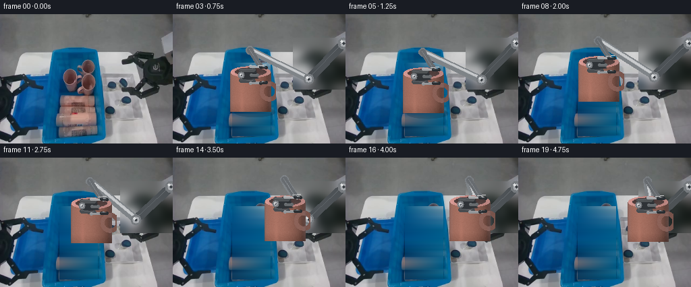
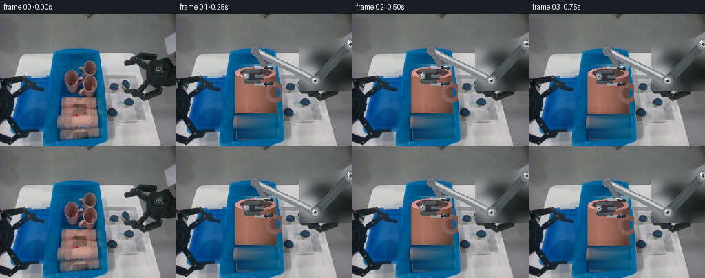

CODING AGENTS AS PIXEL WORLD MODELS
traex/DeepSeek-V4.1-Flash · common50_0005
点击播放 · 原生 RGB 像素
逐轮保存的候选
回放视频、检查图与代码变化。
每份候选均可单独播放。实际图片检查记录在下方工具轨迹中。
候选 01播放与检查图
点击播放 · 原生 RGB 像素


展开代码变化
--- 上一保存版本
+++ 本次保存版本
@@ -0,0 +1,306 @@
+"""Procedurally generate the requested laundry-sorting robot video.
+
+Only the supplied first frame is used. The moving mug is reconstructed from
+its visible pixels and rendered as a shaded cylinder; the robot is drawn with
+an orthographic camera, depth ordering, and simple studio lighting.
+"""
+
+from pathlib import Path
+
+import cv2
+import numpy as np
+from PIL import Image, ImageDraw, ImageFilter
+
+import artifact_io
+
+
+CASE = Path(__file__).resolve().parent
+W, H, N, FPS = 256, 192, 20, 4
+FIRST = np.asarray(Image.open(CASE / "first_frame.png").convert("RGB"))
+
+
+def smoothstep(a, b, x):
+ t = np.clip((x - a) / (b - a), 0.0, 1.0)
+ return t * t * (3.0 - 2.0 * t)
+
+
+def ease(t):
+ t = np.clip(t, 0.0, 1.0)
+ return 0.5 - 0.5 * np.cos(np.pi * t)
+
+
+def poly_mask(points, feather=1.0):
+ canvas = Image.new("L", (W, H), 0)
+ ImageDraw.Draw(canvas).polygon([(float(x), float(y)) for x, y in points], fill=255)
+ arr = np.asarray(canvas, dtype=np.float32) / 255.0
+ if feather:
+ arr = cv2.GaussianBlur(arr, (0, 0), feather)
+ return arr[..., None]
+
+
+def ellipse_mask(cx, cy, rx, ry, feather=1.0):
+ yy, xx = np.mgrid[:H, :W]
+ d = ((xx - cx) / max(rx, 0.5)) ** 2 + ((yy - cy) / max(ry, 0.5)) ** 2
+ if feather:
+ return np.clip((1.0 - d) * max(rx, ry) / max(feather, 0.5) + 0.5, 0, 1)[..., None]
+ return (d <= 1.0)[..., None].astype(np.float32)
+
+
+def over(dst, color, alpha):
+ c = np.asarray(color, dtype=np.float32)
+ return dst * (1.0 - alpha) + c * alpha
+
+
+def shade_cylinder(radius, height, top_rgb, side_rgb, seed=0):
+ """Return an RGBA shaded mug with a hollow elliptical rim and handle."""
+ rng = np.random.default_rng(seed)
+ pad = 8
+ ww, hh = 2 * radius + 2 * pad, height + 2 * pad
+ yy, xx = np.mgrid[:hh, :ww].astype(np.float32)
+ cx, cy = ww / 2.0, pad + radius * 0.28
+ ex = (xx - cx) / radius
+ ey = (yy - cy) / (radius * 0.29)
+ top = ex * ex + ey * ey <= 1.0
+ body = (
+ (np.abs(ex) <= 1.0)
+ & (yy >= cy)
+ & (yy <= cy + height)
+ )
+ rim = top & ~(
+ ((ex / 0.78) ** 2 + ((ey + 0.03) / 0.72) ** 2 <= 1.0)
+ )
+ # A right-side loop handle, integrated into the silhouette.
+ hx, hy = xx - (cx + radius * 0.92), yy - (cy + height * 0.48)
+ hd = (hx / (radius * 0.48)) ** 2 + (hy / (height * 0.25)) ** 2
+ hd_in = (hx / (radius * 0.27)) ** 2 + (hy / (height * 0.135)) ** 2
+ handle = (hd <= 1.0) & (hd_in >= 1.0)
+ alpha = (body | top | handle).astype(np.float32)
+
+ top_c = np.asarray(top_rgb, dtype=np.float32)
+ side_c = np.asarray(side_rgb, dtype=np.float32)
+ out = np.zeros((hh, ww, 3), np.float32)
+ # Cylindrical lighting has a broad warm highlight and a cool reflected edge.
+ nx = np.clip(ex, -1, 1)
+ lambert = np.sqrt(np.clip(1.0 - nx * nx, 0, 1))
+ light = 0.58 + 0.43 * np.clip((-0.48 * nx + 0.88 * lambert), 0, 1)
+ warm = np.stack([light * 1.045, light, light * 0.96], axis=-1)
+ out[body] = side_c * warm[body]
+ out[handle] = side_c * (0.77 + 0.14 * lambert[handle])[..., None]
+
+ # Rim: darker inner wall, bright pink lip, and a small gray ceramic interior.
+ out[top] = top_c * (0.86 + 0.16 * np.clip(-nx[top], 0, 1))[:, None]
+ out[rim] = np.array([213, 151, 145], np.float32) * (
+ 0.88 + 0.15 * np.clip(-nx[rim], 0, 1)
+ )[:, None]
+ inner = top & ~rim
+ out[inner] = np.array([103, 80, 78], np.float32) * (
+ 0.78 + 0.19 * np.clip(ey[inner], 0, 1)
+ )[:, None]
+
+ # Fine ceramic grain, plus a soft vertical specular streak.
+ grain = rng.normal(0.0, 1.7, (hh, ww, 1))
+ out += grain
+ streak = np.exp(-((ex + 0.43) / 0.095) ** 2) * np.clip(
+ (yy - cy - height * 0.16) / (height * 0.8), 0, 1
+ )
+ out += streak[..., None] * np.array([13, 8, 7], np.float32)
+
+ # Bottom contact darkening and a small reflected bounce from the blue bin.
+ bottom = np.clip((yy - cy - height * 0.77) / (height * 0.23), 0, 1)
+ out -= bottom[..., None] * np.array([20, 15, 14], np.float32)
+ edge = np.clip((np.abs(ex) - 0.80) / 0.20, 0, 1)
+ out[body] += edge[body, None] * np.array([2, 8, 12], np.float32)
+
+ rgba = np.dstack([np.clip(out, 0, 255), alpha * 255]).astype(np.uint8)
+ return rgba, int(round(cx)), int(round(cy))
+
+
+def paste_rgba(dst, rgba, cx, anchor_y):
+ """Alpha composite an RGBA sprite with its top-center anchor at cx, anchor_y."""
+ h, w = rgba.shape[:2]
+ x0, y0 = int(round(cx - w / 2)), int(round(anchor_y - anchor_y + 0))
+ # The sprite's rim center is supplied in cy; locate the crop around it.
+ x0 = int(round(cx - w / 2))
+ y0 = int(round(anchor_y))
+ x1, y1 = x0 + w, y0 + h
+ dx0, dy0 = max(0, x0), max(0, y0)
+ dx1, dy1 = min(W, x1), min(H, y1)
+ if dx0 >= dx1 or dy0 >= dy1:
+ return dst
+ sx0, sy0 = dx0 - x0, dy0 - y0
+ sx1, sy1 = sx0 + dx1 - dx0, sy0 + dy1 - dy0
+ src = rgba[sy0:sy1, sx0:sx1].astype(np.float32)
+ a = src[..., 3:4] / 255.0
+ roi = dst[dy0:dy1, dx0:dx1]
+ dst[dy0:dy1, dx0:dx1] = roi * (1 - a) + src[..., :3] * a
+ return dst
+
+
+def draw_capsule(dst, p0, p1, radius, color, z):
+ x0, y0 = p0
+ x1, y1 = p1
+ canvas = Image.new("RGBA", (W, H), (0, 0, 0, 0))
+ d = ImageDraw.Draw(canvas)
+ r = int(round(radius))
+ d.line([(x0, y0), (x1, y1)], fill=tuple(color) + (255,), width=2 * r)
+ d.ellipse((x0 - r, y0 - r, x0 + r, y0 + r), fill=tuple(color) + (255,))
+ d.ellipse((x1 - r, y1 - r, x1 + r, y1 + r), fill=tuple(color) + (255,))
+ # Highlight along the upper-left third of each link.
+ hl = tuple(np.clip(np.asarray(color) + np.array([28, 29, 30]), 0, 255).astype(int))
+ off = max(1, int(radius * 0.28))
+ d.line([(x0 - off, y0 - off), (x1 - off, y1 - off)],
+ fill=hl + (210,), width=max(1, int(radius * 0.22)))
+ a = np.asarray(canvas, np.float32) / 255.0
+ alpha = a[..., 3:4]
+ roi = dst.astype(np.float32)
+ dst[:] = np.clip(roi * (1 - alpha) + a[..., :3] * 255 * alpha, 0, 255).astype(np.uint8)
+ return dst
+
+
+def draw_joint(dst, p, radius, color=(120, 124, 128), inner=(171, 174, 178)):
+ x, y = int(round(p[0])), int(round(p[1]))
+ r = int(round(radius))
+ cv2.circle(dst, (x, y), r, color, -1, cv2.LINE_AA)
+ cv2.circle(dst, (x, y), max(2, int(r * 0.64)), inner, -1, cv2.LINE_AA)
+ cv2.circle(dst, (x, y), max(1, int(r * 0.28)), (54, 59, 64), -1, cv2.LINE_AA)
+ cv2.circle(dst, (x - max(1, r // 3), y - max(1, r // 3)),
+ max(1, r // 4), (222, 224, 225), -1, cv2.LINE_AA)
+ return dst
+
+
+def draw_gripper(dst, cx, cy, opening, angle=0.0):
+ """Parallel jaw gripper, with its grasp point at (cx, cy)."""
+ ca, sa = np.cos(angle), np.sin(angle)
+
+ def tr(x, y):
+ return int(round(cx + ca * x - sa * y)), int(round(cy + sa * x + ca * y))
+
+ # Dark palm behind the two metal fingers.
+ palm = [tr(-20, -8), tr(4, -11), tr(8, 5), tr(-17, 10)]
+ ImageDraw.Draw(Image.new("RGB", (1, 1)))
+ pm = poly_mask(palm, 0.7)
+ dst[:] = over(dst.astype(np.float32), (48, 52, 56), pm).astype(np.uint8)
+ draw_capsule(dst, tr(-17, -7), tr(1, -8), 3.2, (80, 84, 87), 1)
+ draw_capsule(dst, tr(-17, 8), tr(1, 9), 3.2, (73, 77, 81), 1)
+ # Fingers and rubber contact pads.
+ for side in (-1, 1):
+ yy = side * opening / 2
+ draw_capsule(dst, tr(-3, yy), tr(15, yy * 0.93), 2.5,
+ (168, 170, 172) if side < 0 else (147, 150, 153), 2)
+ draw_capsule(dst, tr(12, yy * 0.95), tr(20, yy * 0.88), 2.0,
+ (42, 47, 51), 2)
+ draw_capsule(dst, tr(-2, 0), tr(7, 0), 2.4, (102, 106, 109), 2)
+ draw_joint(dst, tr(-17, 0), 5.2)
+ return dst
+
+
+def mug_pose(t):
+ """Rim-center position, rotation, and gripper opening over 0..19."""
+ if t <= 2:
+ p = np.array([117.0, 84.0])
+ rot = 0.0
+ grip = 26.0
+ elif t <= 5:
+ p = np.array([117.0, 84.0 + 3.0 * ease((t - 2) / 3)])
+ rot = 0.0
+ grip = 26.0 - 4.0 * ease((t - 2) / 3)
+ elif t <= 8:
+ u = ease((t - 5) / 3)
+ p = np.array([117.0 + 4.0 * u, 87.0 - 17.0 * u])
+ rot = -0.06 * np.sin(np.pi * u)
+ grip = 22.0
+ else:
+ u = smoothstep(8, 18, t)
+ p = np.array([121.0 + 73.0 * u, 70.0 - 5.0 * u])
+ p[1] -= 3.5 * np.sin(np.pi * u)
+ rot = 0.035 * np.sin(np.pi * u) * (1 - u)
+ grip = 22.0
+ return p, rot, grip
+
+
+def arm_points(t, grasp):
+ """Shoulder, elbow, wrist, and palm geometry for a stable articulated arm."""
+ # Fixed base at right edge; the wrist follows the mug's upper-left side.
+ shoulder = np.array([253.0, 43.0])
+ wrist = np.array([grasp[0] - 3.0, grasp[1] - 31.0])
+ elbow = np.array([201.0, 101.0 + 0.25 * (wrist[1] - 72.0)])
+ # Keep the articulated lengths fixed enough to read as rigid machinery.
+ return shoulder, elbow, wrist
+
+
+def background_clean():
+ """Remove the original mug and arm where the new geometry will cover them."""
+ base = FIRST.astype(np.float32).copy()
+ # The large blue bin's front face is nearly planar and can be restored by
+ # sampling rows immediately to its left/right, preserving grain and shading.
+ for y in range(72, 181):
+ x0, x1 = 88, 145
+ left = base[y, 82:88].mean(0)
+ right = base[y, 146:152].mean(0)
+ u = np.linspace(0, 1, x1 - x0, dtype=np.float32)[:, None]
+ fill = left * (1 - u) + right * u
+ # Retain the bin's broad vertical illumination variation.
+ fill *= 0.94 + 0.06 * np.sin((y - 70) * np.pi / 115) ** 2
+ base[y, x0:x1] = fill
+ # Replace the foreground gripper with the neutral wall; the new arm covers it.
+ wall = cv2.GaussianBlur(FIRST[35:112, 178:256], (0, 0), 7).astype(np.float32)
+ base[35:112, 178:256] = wall
+ # Keep a soft ambient-occlusion band at the bin lip.
+ lip = poly_mask([(80, 52), (144, 52), (150, 96), (75, 96)], 2.0)
+ lip_color = np.array([1, 91, 143], np.float32)
+ roi = base.astype(np.float32)
+ base = roi * (1 - lip * 0.18) + lip_color * lip * 0.18
+ return np.clip(base, 0, 255).astype(np.uint8)
+
+
+def render_frame(index):
+ if index == 0:
+ return FIRST.copy()
+ frame = background_clean().astype(np.float32)
+ p, rot, grip = mug_pose(index)
+
+ # Small contact shadow on the bin floor.
+ shadow_strength = max(0.0, 1.0 - abs(index - 4) / 5.0)
+ if shadow_strength:
+ sm = ellipse_mask(p[0] + 4, p[1] + 60, 31, 8, 4.0) * 0.24 * shadow_strength
+ frame = frame * (1 - sm) + np.array([10, 29, 43], np.float32) * sm
+
+ # Render arm behind the mug, then mug, then the fingers in front.
+ shoulder, elbow, wrist = arm_points(index, p)
+ draw_capsule(frame, shoulder, elbow, 7.0, (78, 83, 87), 0)
+ draw_capsule(frame, elbow, wrist, 5.7, (128, 133, 137), 0)
+ draw_capsule(frame, elbow + np.array([0, -2]), wrist + np.array([0, -2]),
+ 1.8, (196, 198, 200), 0)
+ draw_joint(frame, shoulder, 9.0)
+ draw_joint(frame, elbow, 8.0)
+ draw_joint(frame, wrist, 6.2)
+
+ rgba, rcx, rcy = shade_cylinder(30, 60, (181, 130, 120), (159, 112, 101), seed=4)
+ # The mug's anchor is its rim center, not the top of the sprite.
+ paste_rgba(frame, rgba, p[0] - 2, p[1] - rcy)
+
+ # Forearm housing is drawn in front of the mug's upper edge.
+ draw_capsule(frame, wrist, np.array([p[0] + 12, p[1] - 8]), 4.4,
+ (105, 109, 113), 2)
+ draw_gripper(frame, p[0] + 1, p[1] + 5, grip, angle=rot)
+
+ # Thin contact highlights around the fingers.
+ cv2.line(frame, (int(p[0] + 9), int(p[1] - 8)),
+ (int(p[0] + 21), int(p[1] - 9)), (209, 210, 210), 1, cv2.LINE_AA)
+
+ # Subtle temporal camera exposure variation, always zero on frame zero.
+ exposure = 0.994 + 0.006 * np.sin(index * 0.9)
+ frame *= exposure
+ return np.clip(frame, 0, 255).astype(np.uint8)
+
+
+def main():
+ frames = np.stack([render_frame(i) for i in range(N)])
+ assert frames.shape == (20, 192, 256, 3) and frames.dtype == np.uint8
+ assert np.array_equal(frames[0], FIRST)
+ artifact_io.save(frames, CASE)
+ print("wrote", CASE / "pixels.npz", frames.shape)
+
+
+if __name__ == "__main__":
+ main()
可观测工具轨迹
实际执行的命令与返回图片。
命令 1exit 0
/bin/bash -c "pwd && rg --files -g '"'!*.mp4'"' -g '"'!*.avi'"' -g '"'!*.mov'"' | sort"
命令 2exit 0
/bin/bash -c "sed -n '1,240p' prompt.txt"
命令 3exit 0
/bin/bash -c "sed -n '1,280p' GENERATION_RULES.md"
命令 4exit 0
/bin/bash -c 'file first_frame.png && identify first_frame.png 2>/dev/null || true && ls -lah'
命令 5exit 0
/bin/bash -c "sed -n '1,260p' artifact_io.py"
命令 6exit 0
/bin/bash -c 'cat task_spec.json'
命令 7exit 0
/bin/bash -c "python - <<'PY'
from PIL import Image
import numpy as np
im=Image.open('first_frame.png').convert('RGB')
a=np.asarray(im)
print(im.size, a.shape, a.dtype, a.min(), a.max(), a.mean(axis=(0,1)))
# top exact colors
u,c=np.unique(a.reshape(-1,3),axis=0,return_counts=True)
for i in np.argsort(c)[-30:][::-1]: print(tuple(u[i]), int(c[i]))
PY"命令 8exit 0
/bin/bash -c "python - <<'PY'
import cv2, numpy as np
im=cv2.cvtColor(cv2.imread('first_frame.png'),cv2.COLOR_BGR2RGB)
# Kmeans on subsample
x=im.reshape(-1,3).astype(np.float32)
crit=(cv2.TERM_CRITERIA_EPS+cv2.TERM_CRITERIA_MAX_ITER,100,0.2)
for k in [8,12,16,20]:
compact,lab,cent=cv2.kmeans(x,k,None,crit,10,cv2.KMEANS_PP_CENTERS)
counts=np.bincount(lab.ravel(),minlength=k)
print('\\nk=',k,'compact',compact)
for i in np.argsort(counts)[::-1]:
print(i, counts[i], cent[i].round().astype(int).tolist())
PY"命令 9exit 0
/bin/bash -c "python - <<'PY'
from PIL import Image
import numpy as np, cv2
im=np.asarray(Image.open('first_frame.png').convert('RGB'))
hsv=cv2.cvtColor(im,cv2.COLOR_RGB2HSV)
H,S,V=[hsv[:,:,i] for i in range(3)]
# ranges
masks={
'blue':((H>85)&(H<125)&(S>90)&(V>45)),
'deepblue':((H>90)&(H<125)&(S>110)&(V<150)),
'pink':(((H<12)|(H>165))&(S>35)&(V>110)),
'redpink':(((H<10)|(H>170))&(S>50)&(V>90)),
'white':((S<25)&(V>160)),
'dark':(V<55),
}
for name,m in masks.items():
n=m.sum(); ys,xs=np.where(m)
print(name,n,'bbox',(xs.min(),ys.min(),xs.max(),ys.max()) if n else None,'cent', (xs.mean(),ys.mean()) if n else None)
if n:
num,lab,stats,cens=cv2.connectedComponentsWithStats(m.astype(np.uint8),8)
comps=sorted([(stats[i,4],tuple(stats[i,:4]),tuple(cens[i].round(1))) for i in range(1,num)], reverse=True)[:12]
print(comps)
PY"命令 10exit 0
/bin/bash -c "python - <<'PY'
import cv2, numpy as np
im=cv2.cvtColor(cv2.imread('first_frame.png'),cv2.COLOR_BGR2RGB)
g=cv2.cvtColor(im,cv2.COLOR_RGB2GRAY)
ed=cv2.Canny(g,40,100)
# line detection
ls=cv2.HoughLinesP(ed,1,np.pi/180,threshold=20,minLineLength=12,maxLineGap=4)
if ls is not None:
for x1,y1,x2,y2 in sorted(ls[:,0],key=lambda a:-((a[2]-a[0])**2+(a[3]-a[1])**2))[:100]:
print((x1,y1,x2,y2),'len',round(((x2-x1)**2+(y2-y1)**2)**.5,1))
PY"命令 11exit 0
/bin/bash -c "python - <<'PY'
from PIL import Image
im=Image.open('first_frame.png').convert('RGB')
# scale 3x nearest and make labeled coordinate grid every 16 pixels
from PIL import ImageDraw,ImageFont
s=3
out=im.resize((256*s,192*s),Image.Resampling.NEAREST)
d=ImageDraw.Draw(out)
for x in range(0,256,16):
d.line((x*s,0,x*s,192*s),fill=(255,0,255),width=1)
d.text((x*s+2,2),str(x),fill=(255,255,0))
for y in range(0,192,16):
d.line((0,y*s,256*s,y*s),fill=(255,0,255),width=1)
d.text((2,y*s+2),str(y),fill=(255,255,0))
out.save('.tmp/grid.png')
PY"命令 12exit 0
/bin/bash -c "python - <<'PY'
from PIL import Image
import numpy as np, cv2
im=np.asarray(Image.open('first_frame.png').convert('RGB'))
# 4x4 or 8x8 block means, classify hue/light
for bs in [8,4]:
h,w,_=im.shape
H,W=w//bs,h//bs
out=[]
chars=' .:-=+*#%@'
for yy in range(H):
row=''
for xx in range(W):
b=im[yy*bs:(yy+1)*bs,xx*bs:(xx+1)*bs].reshape(-1,3).mean(0)
r,g,bl=b
if bl>r*1.35 and bl>g*1.15: ch='B'
elif r>g*1.15 and r>bl*1.1: ch='R'
elif g>r*1.15 and g>bl*1.1: ch='G'
elif max(b)-min(b)<14: ch=chars[min(9,int(max(b)/256*10))]
elif r>g and r>bl: ch='r'
elif bl>r: ch='b'
else: ch='y'
row+=ch
out.append(row)
print('\\nBS',bs)
print('\\n'.join(out))
PY"命令 13exit 0
/bin/bash -c "python - <<'PY'
import cv2, numpy as np
from PIL import Image
im=np.asarray(Image.open('first_frame.png').convert('RGB'))
hsv=cv2.cvtColor(im,cv2.COLOR_RGB2HSV); H,S,V=[hsv[:,:,i] for i in range(3)]
blue=(H>85)&(H<125)&(S>90)&(V>40)
# row ranges of blue
for y in range(40,192):
xs=np.where(blue[y])[0]
if len(xs)>5: print(y, xs.min(), xs.max(), len(xs))
PY"命令 14exit 0
/bin/bash -c "python - <<'PY'
from PIL import Image
import numpy as np
im=np.asarray(Image.open('first_frame.png').convert('RGB'))
# sample rgb patches / selected coords
coords=[(0,0),(128,10),(128,40),(128,48),(128,60),(128,100),(50,70),(100,60),(180,60),(220,80),(140,120),(160,120),(200,150),(230,170),(128,175),(128,185),(100,130),(120,145),(90,135),(145,145),(155,145),(170,150)]
for x,y in coords: print((x,y),im[y,x])
# row segments by grayscale changes
PY"命令 15exit 0
/bin/bash -c "command -v chafa || true; command -v viu || true; command -v jp2 || true; command -v img2txt || true; command -v ffmpeg || true; python - <<'PY' mods=['cv2','numpy','PIL','scipy','skimage','imageio','matplotlib'] for m in mods: try: x=__import__(m); print(m,'ok',getattr(x,'__version__','')) except Exception as e: print(m,'no',e) PY"
命令 16exit 0
/bin/bash -c "python - <<'PY'
import numpy as np
from PIL import Image
im=np.asarray(Image.open('first_frame.png').convert('RGB'))
# make color legend blocks for dominant sample; print patch medians at 8x8 cells that are non-gray/blue
for y in range(0,192,8):
vals=[]
for x in range(0,256,8):
b=im[y:y+8,x:x+8].reshape(-1,3).mean(0).astype(int)
mx,mn=b.max(),b.min()
if mx-mn<18: vals.append('gray')
elif b[2]>b[0]*1.25: vals.append('blue')
elif b[0]>b[1]*1.15: vals.append('pink')
elif b[0]>b[2]*1.2: vals.append('red')
else: vals.append('other')
# group
seg=[]; st=0
for i in range(1,len(vals)+1):
if i==len(vals) or vals[i]"'!=vals[st]:
if i-st>=1: seg.append((st*8,i*8,vals[st]))
st=i
print(y, seg)
PY'命令 17exit 0
/bin/bash -c "python - <<'PY'
from PIL import Image
import numpy as np, cv2
im=np.asarray(Image.open('first_frame.png').convert('RGB'))
hsv=cv2.cvtColor(im,cv2.COLOR_RGB2HSV)
H,S,V=[hsv[:,:,i].astype(int) for i in range(3)]
r,g,b=[im[:,:,i].astype(int) for i in range(3)]
# category per pixel using hue and intensity. chars distinguish blue shades/pink/white/gray/dark
cat=np.full(im.shape[:2],' ',dtype='<U1')
# order: dark, blue, pink, bright
cat[(V<45)]='.'
cat[(V>=45)&(V<75)]=':'
cat[(V>=75)&(V<105)]='-'
cat[(V>=105)&(V<135)]='='
cat[(V>=135)&(V<165)]='+'
cat[(V>=165)&(V<200)]='*'
cat[(V>=200)]='#'
blue=(H>82)&(H<130)&(S>70)&(V>40)
cat[blue & (V<80)]='b'
cat[blue & (V>=80)&(V<120)]='B'
cat[blue & (V>=120)]='C'
pink=(((H<12)|(H>165))&(S>32)&(V>85))
cat[pink & (V<130)]='r'
cat[pink & (V>=130)]='R'
# downsample by 2, majority-ish: choose dominant special or mean luminance
bs=4
print(' '+''.join(str((x//10)%10) for x in range(0,256,bs)))
print(' '+''.join(str(x%10) for x in range(0,256,bs)))
for yy in range(0,192,bs):
row=''
for xx in range(0,256,bs):
block=cat[yy:yy+bs,xx:xx+bs]
u,c=np.unique(block,return_counts=True)
# prioritize semantic chars if >= 3 pixels
sem=[(cc,uu) for uu,cc in zip(u,c) if uu in 'bBCrR']
if sem:
cc,uu=max(sem)
row += uu if cc>=2 else u[np.argmax(c)]
else: row += u[np.argmax(c)]
print(f'{yy:03d} '+row)
PY"命令 18exit 0
/bin/bash -c "python - <<'PY'
import cv2, numpy as np
from PIL import Image
im=np.asarray(Image.open('first_frame.png').convert('RGB'))
hsv=cv2.cvtColor(im,cv2.COLOR_RGB2HSV)
H,S,V=[hsv[:,:,i].astype(int) for i in range(3)]
r,g,b=[im[:,:,i].astype(int) for i in range(3)]
pink=(((H<15)|(H>165))&(S>28)&(V>75))
for y in range(50,181,2):
xs=np.where(pink[y])[0]
# contiguous segs >=1
seg=[]
if len(xs):
st=pr=xs[0]
for x in xs[1:]:
if x>pr+1:
seg.append((st,pr)); st=x
pr=x
seg.append((st,pr))
print(f'{y:3d}',seg)
PY"命令 19exit 0
/bin/bash -c "python - <<'PY'
import cv2, numpy as np
from PIL import Image
im=np.asarray(Image.open('first_frame.png').convert('RGB'))
hsv=cv2.cvtColor(im,cv2.COLOR_RGB2HSV)
H,S,V=[hsv[:,:,i].astype(int) for i in range(3)]
blue=(H>85)&(H<125)&(S>90)&(V>40)
# Print intervals of blue for selected rows with holes
for y in [49,50,55,60,65,70,75,80,85,90,95,96,100,105,110,115,120,123,125,130,135,140,145,150,155,160,165,170,175,180,185,190,191]:
xs=np.where(blue[y])[0]; seg=[]
if len(xs):
st=pr=xs[0]
for x in xs[1:]:
if x>pr+1:
if pr-st>=1: seg.append((int(st),int(pr)))
st=x
pr=x
if pr-st>=1: seg.append((int(st),int(pr)))
print(y,seg)
PY"命令 20exit 0
/bin/bash -c "python - <<'PY'
from PIL import Image
import numpy as np, cv2
im=np.asarray(Image.open('first_frame.png').convert('RGB'))
regions={'bg_top':(0,0,256,48),'bin_lip':(65,45,155,70),'bin_body':(10,70,160,180),'upper_pink':(90,65,145,118),'mug_body':(84,118,145,178),'right_blue':(152,90,200,150),'arm_upper':(145,48,245,120),'right_bg':(195,120,256,192),'floor':(0,175,256,192)}
for name,(x1,y1,x2,y2) in regions.items():
a=im[y1:y2,x1:x2].reshape(-1,3)
print('\\n',name,(x1,y1,x2,y2),'mean',a.mean(0).round(1),'median',np.median(a,0).astype(int))
# kmeans 5
x=a.astype(np.float32); crit=(cv2.TERM_CRITERIA_EPS+cv2.TERM_CRITERIA_MAX_ITER,50,.2)
_,lab,cen=cv2.kmeans(x,min(5,len(x)),None,crit,5,cv2.KMEANS_PP_CENTERS)
for i in np.argsort(np.bincount(lab.ravel()))[::-1]: print(' ',np.bincount(lab.ravel())[i],cen[i].round().astype(int).tolist())
PY"命令 21exit 0
/bin/bash -c "python - <<'PY'
from PIL import Image
import numpy as np, cv2
im=np.asarray(Image.open('first_frame.png').convert('RGB'))
g=cv2.cvtColor(im,cv2.COLOR_RGB2GRAY)
# For x 130..256 y 40..150 print block chars 2x2; colored labels and gray brightness
hsv=cv2.cvtColor(im,cv2.COLOR_RGB2HSV); H,S,V=[hsv[:,:,i].astype(int) for i in range(3)]
for y in range(40,152,2):
row=''
for x in range(120,256,2):
H0=np.median(H[y:y+2,x:x+2]);S0=np.median(S[y:y+2,x:x+2]);V0=np.median(V[y:y+2,x:x+2]); rr=im[y:y+2,x:x+2].reshape(-1,3).mean(0)
if (H0>82 and H0<130 and S0>70 and V0>40): ch='B' if V0<110 else 'C'
elif ((H0<15 or H0>165) and S0>30 and V0>80): ch='R'
else:
ch=' .:-=+*#%@'[min(9,int(V0/256*10))]
row+=ch
print(f'{y:03d} {row}')
PY"命令 22exit 0
/bin/bash -c "python - <<'PY'
from PIL import Image
import numpy as np, cv2
im=np.asarray(Image.open('first_frame.png').convert('RGB'))
g=cv2.cvtColor(im,cv2.COLOR_RGB2GRAY)
# edge orientation and geometry; print Sobel edges downsample 4x with ascii
sx=cv2.Sobel(g,cv2.CV_32F,1,0,ksize=3); sy=cv2.Sobel(g,cv2.CV_32F,0,1,ksize=3)
mag=np.hypot(sx,sy); ang=(np.degrees(np.arctan2(sy,sx))+180)%180
# count edge orientations in region
for name,(x1,y1,x2,y2) in {'all':(0,0,256,192),'arm':(145,50,256,160),'bin':(0,45,160,180),'mug':(85,65,145,180)}.items():
a=ang[y1:y2,x1:x2][mag[y1:y2,x1:x2]>80]
hist,b=np.histogram(a,bins=np.arange(0,181,15))
print(name,list(zip(b[:-1],hist)))
PY"命令 23exit 0
/bin/bash -c "python - <<'PY'
from PIL import Image
import numpy as np, cv2
im=np.asarray(Image.open('first_frame.png').convert('RGB'))
g=cv2.cvtColor(im,cv2.COLOR_RGB2GRAY)
# canny, dilate lightly, print 2x2 cells where edges
ed=cv2.Canny(g,35,90)
ed=cv2.dilate(ed,np.ones((2,2),np.uint8))
print(' '+''.join(str((x//10)%10) for x in range(0,256,2)))
print(' '+''.join(str(x%10) for x in range(0,256,2)))
for y in range(0,192,2):
row=''
for x in range(0,256,2):
cnt=ed[y:y+2,x:x+2].sum()
row += '#' if cnt>=3 else ('+' if cnt>=1 else ' ')
print(f'{y:03d} {row}')
PY"命令 24exit 0
/bin/bash -c "python - <<'PY'
import cv2,numpy as np
from PIL import Image
im=np.asarray(Image.open('first_frame.png').convert('RGB'))
hsv=cv2.cvtColor(im,cv2.COLOR_RGB2HSV); H,S,V=[hsv[:,:,i].astype(int) for i in range(3)]
# x=145..256; median colors per 16x16 tile list, output region labels
for y in range(40,192,16):
for x in range(140,256,16):
b=im[y:y+16,x:x+16].reshape(-1,3); c=np.median(b,0).astype(int); m=b.mean(0).astype(int)
print(f'({x:3d},{y:3d}) med {tuple(c)} mean {tuple(m)}')
print()
PY"命令 25exit 0
/bin/bash -c "python - <<'PY'
import cv2,numpy as np
from PIL import Image
im=np.asarray(Image.open('first_frame.png').convert('RGB'))
hsv=cv2.cvtColor(im,cv2.COLOR_RGB2HSV); H,S,V=[hsv[:,:,i] for i in range(3)]
# masks by gray brightness and saturation
for name,m in [('bright',((S<30)&(V>150))),('white',((S<30)&(V>180))),('dark',((S<60)&(V<70))),('mid',((S<30)&(V>90)&(V<160)))]:
n,lab,stats,cens=cv2.connectedComponentsWithStats(m.astype('uint8'),8)
print('\\n',name, m.sum())
for i in np.argsort(stats[1:,4])[::-1][:15]+1:
x,y,w,h,a=stats[i];
if a>=20: print(' a',a,'bbox',x,y,w,h,'cent',cens[i].round(1))
PY"命令 26exit 0
/bin/bash -c "python - <<'PY'
import cv2,numpy as np
from PIL import Image
im=np.asarray(Image.open('first_frame.png').convert('RGB'))
hsv=cv2.cvtColor(im,cv2.COLOR_RGB2HSV); H,S,V=[hsv[:,:,i] for i in range(3)]
# make ASCII of edge density + colors for region 130-256, 45-130 at 1x2 cells
for y in range(45,131,2):
row=''
for x in range(130,256,2):
hh=H[y:y+2,x:x+2].mean();ss=S[y:y+2,x:x+2].mean();vv=V[y:y+2,x:x+2].mean()
if ss>70 and hh>85: ch='B'
elif ss>35 and (hh<12 or hh>170): ch='r'
elif vv>180:ch='#'
elif vv>140:ch='*'
elif vv>105:ch='+'
elif vv>70:ch='-'
elif vv>40:ch=':'
else:ch='.'
row+=ch
print(f'{y:3d} {row}')
PY"命令 27exit 0
/bin/bash -c "python - <<'PY'
from PIL import Image
import numpy as np, cv2
im=np.asarray(Image.open('first_frame.png').convert('RGB'))
hsv=cv2.cvtColor(im,cv2.COLOR_RGB2HSV); H,S,V=[hsv[:,:,i].astype(int) for i in range(3)]
# chars: each 4x4 dominant. show full x130..256
print(' '+''.join(str((x//10)%10) for x in range(130,256,4)))
print(' '+''.join(str(x%10) for x in range(130,256,4)))
for y in range(40,145,4):
row=''
for x in range(130,256,4):
hs=H[y:y+4,x:x+4].mean(); ss=S[y:y+4,x:x+4].mean(); vv=V[y:y+4,x:x+4].mean()
if ss>65 and hs>85: ch='B'
elif ss>32 and (hs<13 or hs>170) and vv>80: ch='r'
else: ch=' .:-=+*#%@'[min(9,int(vv/256*10))]
row+=ch
print(f'{y:03d} {row}')
PY"命令 28exit 0
/bin/bash -c "python - <<'PY'
from PIL import Image
import numpy as np, cv2
im=np.asarray(Image.open('first_frame.png').convert('RGB'))
hsv=cv2.cvtColor(im,cv2.COLOR_RGB2HSV); H,S,V=[hsv[:,:,i].astype(float) for i in range(3)]
# downsample 2x2 median then classify
h,w=im.shape[:2]; bs=2
print(' '+''.join(str((x//10)%10) for x in range(0,w,bs)))
print(' '+''.join(str(x%10) for x in range(0,w,bs)))
for y in range(0,h,bs):
row=''
for x in range(0,w,bs):
hs=np.median(H[y:y+bs,x:x+bs]);ss=np.median(S[y:y+bs,x:x+bs]);vv=np.median(V[y:y+bs,x:x+bs])
if ss>70 and 85<hs<130:
ch='B' if vv<115 else ('C' if vv<160 else 'D')
elif ss>30 and (hs<14 or hs>170) and vv>70:
ch='r' if vv<145 else 'R'
elif ss<35:
ch=' .:-=+*#%@'[min(9,int(vv/230*10))]
elif vv<60: ch=':'
elif vv<110: ch='-'
elif vv<160: ch='+'
else: ch='*'
row+=ch
print(f'{y:03d} {row}')
PY"命令 29exit 0
/bin/bash -c "python - <<'PY'
import cv2,numpy as np
from PIL import Image
im=np.asarray(Image.open('first_frame.png').convert('RGB'))
hsv=cv2.cvtColor(im,cv2.COLOR_RGB2HSV); H,S,V=[hsv[:,:,i].astype(int) for i in range(3)]
# blue hue image, print actual rgb at grid every 8 in blue bin
for y in range(48,193,8):
vals=[]
for x in range(0,200,8):
b=im[y:y+8,x:x+8].reshape(-1,3).mean(0).astype(int)
hh=H[y:y+8,x:x+8].mean(); ss=S[y:y+8,x:x+8].mean()
if ss>50 and hh>80: vals.append(f'{x}:{tuple(b)}')
print(y,' '.join(vals))
PY"命令 30exit 0
/bin/bash -c "python - <<'PY'
import cv2,numpy as np
from PIL import Image
im=np.asarray(Image.open('first_frame.png').convert('RGB'))
hsv=cv2.cvtColor(im,cv2.COLOR_RGB2HSV); H,S,V=[hsv[:,:,i].astype(int) for i in range(3)]
for x in [80,100,120,140,150,160,180,200,220,240,255]:
print('\\nx',x)
for y in range(0,192,4):
b=im[y:y+4,x:x+4].reshape(-1,3).mean(0).astype(int); hh=H[y:y+4,x:x+4].mean();ss=S[y:y+4,x:x+4].mean();vv=V[y:y+4,x:x+4].mean()
if ss>60 and hh>85: c='BLUE'
elif ss>30 and (hh<13 or hh>170): c='PINK'
elif vv>180:c='WHITE'
elif vv<65:c='DARK'
else:c='MID'
print(f'{y:3d}:{c}:{tuple(b)}',end=' ')
if y%20==16: print()
print()
PY"命令 31exit 0
/bin/bash -c "python - <<'PY'
from PIL import Image
import numpy as np
im=np.asarray(Image.open('first_frame.png').convert('RGB'))
# ANSI truecolor image, crop x70..220,y40..180, each char 2x4 pixel average, using upper half block
for y in range(40,180,4):
s=''
for x in range(70,220,2):
b=im[y:y+4,x:x+2].reshape(-1,3).mean(0).astype(int)
s+=f'\\x1b[48;2;{b[0]};{b[1]};{b[2]}m '
print(s+'\\x1b[0m')
PY"命令 32exit 0
/bin/bash -c "python - <<'PY'
import cv2,numpy as np
from PIL import Image
im=np.asarray(Image.open('first_frame.png').convert('RGB'))
# Try isolate robot arm by manual polygon? print edges ascii in right side. Make every 1x2 char by thresholded local gradient and color
for y in range(44,132,2):
row=''
for x in range(140,256,2):
b=im[y:y+2,x:x+2].reshape(-1,3).mean(0)
# bin colors versus gray/white
r,g,bl=b
if bl>r*1.3 and g>r*1.15 and bl>65:ch='B'
elif r>g*1.05 and r>bl*1.05 and g>35:ch='r'
elif max(b)<45:ch='.'
elif max(b)<80:ch=':'
elif max(b)<120:ch='-'
elif max(b)<155:ch='='
elif max(b)<185:ch='+'
elif max(b)<215:ch='*'
else:ch='#'
row+=ch
print(f'{y:3d} {row}')
PY"命令 33exit 0
/bin/bash -c "python - <<'PY'
import cv2,numpy as np
from PIL import Image
im=np.asarray(Image.open('first_frame.png').convert('RGB'))
hsv=cv2.cvtColor(im,cv2.COLOR_RGB2HSV); H,S,V=[hsv[:,:,i].astype(int) for i in range(3)]
blue=(H>85)&(H<125)&(S>90)&(V>40)
# Estimate exact boundaries by gradient for large blue bin: print contour via cv2 findContours
n,lab,stats,cens=cv2.connectedComponentsWithStats(blue.astype('uint8'),8)
i=1+np.argmax(stats[1:,4])
m=(lab==i).astype('uint8')
# approx polygon
cs,_=cv2.findContours(m,cv2.RETR_EXTERNAL,cv2.CHAIN_APPROX_SIMPLE)
c=max(cs,key=cv2.contourArea)
for eps in [1,2,3,5,8]:
ap=cv2.approxPolyDP(c,eps,True)
print('eps',eps,'pts',[tuple(p[0]) for p in ap])
PY"命令 34exit 0
/bin/bash -c "python - <<'PY'
import cv2,numpy as np
from PIL import Image
im=cv2.imread('first_frame.png')
mask=np.zeros(im.shape[:2],np.uint8); bgd=np.zeros((1,65),np.float64); fgd=np.zeros((1,65),np.float64)
rect=(82,114,65,66)
cv2.grabCut(im,mask,rect,bgd,fgd,8,cv2.GC_INIT_WITH_RECT)
fg=((mask==1)|(mask==3)).astype(np.uint8)
print('area',fg.sum(),'bbox',cv2.boundingRect(fg))
for y in range(108,184,2):
row=''
for x in range(78,152,2):
row += '#' if fg[y:y+2,x:x+2].mean()>.4 else '.'
print(f'{y:3d} {row}')
PY"命令 35exit 1
/bin/bash -c 'python generate.py'
命令 36exit 0
/bin/bash -c 'python generate.py'
命令 37exit 0
/bin/bash -c "python - <<'PY'
import numpy as np, cv2
from PIL import Image
z=np.load('pixels.npz')['pixels']; frames=np.stack([((z[:,:,i]>>16)&255).astype(np.uint8) for i in range(20)],0) # wrong shape actually packed h,w
# load saved pngs instead
frames=np.stack([np.asarray(Image.open(f'frames/{i:02d}.png').convert('RGB')) for i in range(20)])
for i,a in enumerate(frames):
hsv=cv2.cvtColor(a,cv2.COLOR_RGB2HSV); H,S,V=[hsv[:,:,j].astype(int) for j in range(3)]
pink=(((H<15)|(H>165))&(S>30)&(V>80))
blue=(H>85)&(H<125)&(S>90)&(V>40)
ys,xs=np.where(pink)
print(i,'pink',len(xs),'bbox',(xs.min(),ys.min(),xs.max(),ys.max()) if len(xs) else None,'cent',(round(xs.mean(),1),round(ys.mean(),1)) if len(xs) else None,'blue',blue.sum(),'diff',np.abs(a.astype(int)-frames[0]).sum())
# bbox differences from frame0 per frame
PY"命令 38exit 0
/bin/bash -c "python - <<'PY'
import numpy as np, cv2
from PIL import Image
im=np.asarray(Image.open('first_frame.png').convert('RGB')).astype(int)
r,g,b=[im[:,:,i] for i in range(3)]
hsv=cv2.cvtColor(im.astype(np.uint8),cv2.COLOR_RGB2HSV); H,S,V=[hsv[:,:,i].astype(int) for i in range(3)]
# red-ish score
m=(r>g+3)&(r>b+3)&(V>45)
# restrict ROI
roi=np.zeros_like(m); roi[60:181,80:151]=1; m&=roi.astype(bool)
# close small gaps / fill holes
n,lab,stats,cens=cv2.connectedComponentsWithStats(m.astype(np.uint8),8)
print([(stats[i,4],tuple(stats[i,:4])) for i in range(1,n) if stats[i,4]>10])
# components >20
keep=np.zeros_like(m)
for i in range(1,n):
if stats[i,4]>20: keep|=(lab==i)
keep=cv2.morphologyEx(keep.astype(np.uint8),cv2.MORPH_CLOSE,np.ones((7,7),np.uint8),iterations=2)
# fill contour
cs,_=cv2.findContours(keep,cv2.RETR_EXTERNAL,cv2.CHAIN_APPROX_SIMPLE)
fill=np.zeros_like(keep)
for c in cs:
if cv2.contourArea(c)>30: cv2.drawContours(fill,[c],-1,1,-1)
for y in range(60,181,2):
row=''
for x in range(80,152,2):
cnt=fill[y:y+2,x:x+2].sum()
row += '#' if cnt>=3 else ('+' if cnt else '.')
print(f'{y:3d} {row}')
PY"命令 39exit 0
/bin/bash -c "python - <<'PY'
from PIL import Image
import numpy as np, cv2
im=np.asarray(Image.open('first_frame.png').convert('RGB'))
# crop mug, create edge map + colored region map 2x2 with coords 80..152
for y in range(64,180,2):
row=''
for x in range(80,152,2):
b=im[y:y+2,x:x+2].reshape(-1,3).mean(0); r,g,bl=b
if r>g+7 and r>bl+7 and max(b)>80: ch='P'
elif max(b)-min(b)<20 and max(b)>145: ch='W'
elif max(b)<65:ch='.'
elif max(b)<105:ch=':'
elif max(b)<145:ch='-'
elif max(b)<185:ch='+'
else:ch='*'
row+=ch
print(f'{y:3d} {row}')
PY"命令 40exit 0
/bin/bash -c "python - <<'PY'
import cv2,numpy as np
from PIL import Image
im=np.asarray(Image.open('first_frame.png').convert('RGB'))
g=cv2.cvtColor(im,cv2.COLOR_RGB2GRAY)
# test image templates from pink crop against image maybe identify object's shape via inpainting rough output; create mug segmented and background fill preview
r,gc,b=[im[:,:,i].astype(int) for i in range(3)]
m=(r>gc+3)&(r>b+3)&(im.max(2)>45)
roi=np.zeros_like(m); roi[62:181,82:152]=1; m&=roi.astype(bool)
keep=np.zeros_like(m)
n,lab,stats,cens=cv2.connectedComponentsWithStats(m.astype(np.uint8),8)
for i in range(1,n):
if stats[i,4]>20: keep|=(lab==i)
keep=cv2.morphologyEx(keep.astype(np.uint8),cv2.MORPH_CLOSE,np.ones((7,7),np.uint8),iterations=2)
cs,_=cv2.findContours(keep,cv2.RETR_EXTERNAL,cv2.CHAIN_APPROX_SIMPLE)
fill=np.zeros_like(keep)
for c in cs:
if cv2.contourArea(c)>30: cv2.drawContours(fill,[c],-1,1,-1)
# polygon approx
c=max(cs,key=cv2.contourArea)
for e in [1,2,3,5]: print(e,[tuple(p[0]) for p in cv2.approxPolyDP(c,e,True)])
# bounding
ys,xs=np.where(fill); print('bbox',xs.min(),ys.min(),xs.max(),ys.max(),'area',fill.sum())
# produce diagnostic alpha
rgba=np.dstack([im,np.where(fill,255,0).astype(np.uint8)])
Image.fromarray(rgba).save('.tmp/mug_alpha.png')
PY"命令 41exit 0
/bin/bash -c "python - <<'PY'
import cv2,numpy as np
from PIL import Image
im=np.asarray(Image.open('first_frame.png').convert('RGB'))
rgb=im.astype(int); r,g,b=[rgb[:,:,i] for i in range(3)]
red=(r>g+2)&(r>b+2)&(rgb.max(2)>40)
roi=np.zeros(im.shape[:2],np.uint8); roi[116:182,80:148]=1
mask=np.full(im.shape[:2],cv2.GC_BGD,np.uint8)
mask[roi.astype(bool)]=cv2.GC_PR_FGD
mask[(red & roi.astype(bool))]=cv2.GC_FGD
# set definite background outside + body surrounding
bgd=np.zeros((1,65),np.float64);fgd=np.zeros((1,65),np.float64)
cv2.grabCut(cv2.cvtColor(im,cv2.COLOR_RGB2BGR),mask,None,bgd,fgd,8,cv2.GC_INIT_WITH_MASK)
a=((mask==1)|(mask==3)).astype(np.uint8)
n,lab,stats,cens=cv2.connectedComponentsWithStats(a,8)
keep=np.zeros_like(a)
for i in range(1,n):
if stats[i,4]>100: keep|=(lab==i).astype(np.uint8)
# fill holes
cs,_=cv2.findContours(keep,cv2.RETR_EXTERNAL,cv2.CHAIN_APPROX_SIMPLE)
fill=np.zeros_like(keep)
for c in cs:
if cv2.contourArea(c)>100: cv2.drawContours(fill,[c],-1,1,-1)
print('areas',a.sum(),keep.sum(),fill.sum(),'bbox',cv2.boundingRect(fill))
for y in range(116,182,2):
row=''
for x in range(80,148,2):
cnt=fill[y:y+2,x:x+2].sum(); row+='#' if cnt>=3 else ('+' if cnt else '.')
print(f'{y:3d} {row}')
PY"命令 42exit 0
/bin/bash -c "python - <<'PY'
import numpy as np, cv2
from PIL import Image
im=np.asarray(Image.open('first_frame.png').convert('RGB'))
rgb=im.astype(int); r,g,b=[rgb[:,:,i] for i in range(3)]
red=(r>g+2)&(r>b+2)&(rgb.max(2)>40)
roi=np.zeros(im.shape[:2],np.uint8); roi[116:182,80:148]=1
mask=np.full(im.shape[:2],cv2.GC_BGD,np.uint8); mask[roi.astype(bool)]=cv2.GC_PR_FGD; mask[(red & roi.astype(bool))]=cv2.GC_FGD
bgd=np.zeros((1,65),np.float64);fgd=np.zeros((1,65),np.float64)
cv2.grabCut(cv2.cvtColor(im,cv2.COLOR_RGB2BGR),mask,None,bgd,fgd,8,cv2.GC_INIT_WITH_MASK)
a=((mask==1)|(mask==3)).astype(np.uint8)
n,lab,stats,cens=cv2.connectedComponentsWithStats(a,8)
keep=np.zeros_like(a)
for i in range(1,n):
if stats[i,4]>100: keep|=(lab==i).astype(np.uint8)
cs,_=cv2.findContours(keep,cv2.RETR_EXTERNAL,cv2.CHAIN_APPROX_SIMPLE)
fill=np.zeros_like(keep)
for c in cs:
if cv2.contourArea(c)>100: cv2.drawContours(fill,[c],-1,1,-1)
# output some contour points every 3 pixels
c=max(cs,key=cv2.contourArea)
for e in [1,2,3,4]: print(e,[tuple(map(int,p[0])) for p in cv2.approxPolyDP(c,e,True)])
# Also top 116-120 may be noise: preview polygon at 5
Image.fromarray(np.dstack([im,np.where(fill,255,0).astype(np.uint8)])).save('.tmp/mug_body_alpha.png')
PY"命令 43exit 0
/bin/bash -c "python - <<'PY'
from PIL import Image
import numpy as np, cv2
im=np.asarray(Image.open('first_frame.png').convert('RGB'))
# target upper pink shape crop / save enhanced ascii using saturation 1x2
# print mask from grabcut all coordinates downsampled 1 x2
rgb=im.astype(int); r,g,b=[rgb[:,:,i] for i in range(3)]
red=(r>g+2)&(r>b+2)&(rgb.max(2)>40)
# Try grabcut rect around upper handle with bg as blue but foreground sparse red; probably sees dark handle.
mask=np.full(im.shape[:2],cv2.GC_BGD,np.uint8)
roi=np.zeros(im.shape[:2],np.uint8); roi[64:122,88:148]=1
mask[roi.astype(bool)]=cv2.GC_PR_BGD
mask[(red & roi.astype(bool))]=cv2.GC_PR_FGD
# definite pink on selected central points
mask[red & roi.astype(bool) & (r>50)]=cv2.GC_FGD
bgd=np.zeros((1,65),np.float64);fgd=np.zeros((1,65),np.float64)
cv2.grabCut(cv2.cvtColor(im,cv2.COLOR_RGB2BGR),mask,None,bgd,fgd,10,cv2.GC_INIT_WITH_MASK)
a=((mask==1)|(mask==3)).astype(np.uint8)
n,lab,stats,cens=cv2.connectedComponentsWithStats(a,8)
print(sorted([(stats[i,4],tuple(stats[i,:4])) for i in range(1,n)],reverse=True)[:10])
PY"命令 44exit 0
/bin/bash -c "python - <<'PY'
from PIL import Image
import numpy as np, cv2
im=np.asarray(Image.open('first_frame.png').convert('RGB'))
rgb=im.astype(int); r,g,b=[rgb[:,:,i] for i in range(3)]
red=(r>g+2)&(r>b+2)&(rgb.max(2)>40)
mask=np.full(im.shape[:2],cv2.GC_BGD,np.uint8)
roi=np.zeros(im.shape[:2],np.uint8); roi[64:122,88:148]=1
mask[roi.astype(bool)]=cv2.GC_PR_BGD
mask[(red & roi.astype(bool))]=cv2.GC_PR_FGD
mask[red & roi.astype(bool) & (r>50)]=cv2.GC_FGD
bgd=np.zeros((1,65),np.float64);fgd=np.zeros((1,65),np.float64)
cv2.grabCut(cv2.cvtColor(im,cv2.COLOR_RGB2BGR),mask,None,bgd,fgd,10,cv2.GC_INIT_WITH_MASK)
a=((mask==1)|(mask==3)).astype(np.uint8)
n,lab,stats,cens=cv2.connectedComponentsWithStats(a,8)
keep=np.zeros_like(a)
for i in range(1,n):
if stats[i,4]>50: keep|=(lab==i).astype(np.uint8)
cs,_=cv2.findContours(keep,cv2.RETR_EXTERNAL,cv2.CHAIN_APPROX_SIMPLE)
fill=np.zeros_like(keep)
for c in cs:
if cv2.contourArea(c)>50: cv2.drawContours(fill,[c],-1,1,-1)
for y in range(64,122,2):
row=''
for x in range(88,148,2):
cnt=fill[y:y+2,x:x+2].sum(); row+='#' if cnt>=3 else ('+' if cnt else '.')
print(f'{y:3d} {row}')
PY"命令 45exit 0
/bin/bash -c "python - <<'PY'
import cv2,numpy as np
from PIL import Image
im=np.asarray(Image.open('first_frame.png').convert('RGB'))
# hue channels etc and edge positions of right blue tray
hsv=cv2.cvtColor(im,cv2.COLOR_RGB2HSV); H,S,V=[hsv[:,:,i].astype(int) for i in range(3)]
blue=(H>85)&(H<125)&(S>90)&(V>40)
# connected components in right x150..210 y85..160
m=np.zeros_like(blue); m[85:160,150:210]=blue[85:160,150:210]
n,lab,stats,cens=cv2.connectedComponentsWithStats(m.astype(np.uint8),8)
print(sorted([(stats[i,4],tuple(stats[i,:4])) for i in range(1,n)],reverse=True)[:20])
# print row intervals of blue right
for y in range(85,160,2):
xs=np.where(blue[y,150:215])[0]+150
seg=[]
if len(xs):
st=pr=xs[0]
for x in xs[1:]:
if x>pr+1: seg.append((st,pr));st=x
pr=x
seg.append((st,pr))
print(y,seg)
PY"命令 46exit 0
/bin/bash -c "python - <<'PY'
import cv2,numpy as np
from PIL import Image
im=np.asarray(Image.open('first_frame.png').convert('RGB'))
hsv=cv2.cvtColor(im,cv2.COLOR_RGB2HSV); H,S,V=[hsv[:,:,i].astype(int) for i in range(3)]
# right tray blue mask looser and examine components/contour around 154..200
m=(H>82)&(H<135)&(S>65)&(V>35)
roi=np.zeros_like(m); roi[85:175,145:215]=1; m&=roi.astype(bool)
for y in range(90,180,2):
row=''
for x in range(145,215,2):
cnt=m[y:y+2,x:x+2].sum();row+='#' if cnt>=3 else ('+' if cnt else '.')
print(f'{y:3d} {row}')
PY"命令 47exit 0
/bin/bash -c "python - <<'PY'
import numpy as np, cv2
from PIL import Image
im=np.asarray(Image.open('first_frame.png').convert('RGB'))
# Try contours on saturation (blue bin body) to get boundary, using low sat thresholds and color clustering
lab=cv2.cvtColor(im,cv2.COLOR_RGB2LAB).astype(np.float32)
# blue color distance to prototype [0,90,145] in lab?
for name,proto in [('blue',[0,90,145]),('pink',[160,115,105]),('white',[200,200,200]),('dark',[30,40,40])]:
p=cv2.cvtColor(np.uint8([[proto]]),cv2.COLOR_RGB2LAB)[0,0].astype(float)
d=np.linalg.norm(lab-p,axis=2)
m=d<25
n,la,stats,cens=cv2.connectedComponentsWithStats(m.astype('uint8'),8)
print(name,sorted([(stats[i,4],tuple(stats[i,:4])) for i in range(1,n)],reverse=True)[:8])
PY"命令 48exit 0
/bin/bash -c "python - <<'PY'
import numpy as np, cv2
from PIL import Image
im=np.asarray(Image.open('first_frame.png').convert('RGB')).astype(np.float32)
# use color prototypes to segment blue tray body: HSV inspect coordinates around 155..200,110..180
hsv=cv2.cvtColor(im.astype(np.uint8),cv2.COLOR_RGB2HSV)
for y in range(90,181,4):
vals=[]
for x in range(145,215,4):
h,s,v=hsv[y:y+4,x:x+4].reshape(-1,3).mean(0)
if s>35 and h>80: vals.append((x,tuple(im[y:y+4,x:x+4].reshape(-1,3).mean(0).astype(int)),int(h),int(s),int(v)))
print(y,vals)
PY"命令 49exit 0
/bin/bash -c "python - <<'PY'
from PIL import Image
import numpy as np
im=np.asarray(Image.open('first_frame.png').convert('RGB'))
# print right tray RGB coarse at 8x8 grid values with H/S/V summary; make hue class
for y in range(85,185,8):
print(y,end=' ')
for x in range(150,210,8):
b=im[y:y+8,x:x+8].reshape(-1,3).mean(0).astype(int)
print(tuple(b),end=' ')
print()
PY"命令 50exit 0
/bin/bash -c "python - <<'PY'
from PIL import Image
import numpy as np, cv2
im=np.asarray(Image.open('first_frame.png').convert('RGB'))
# nearest-neighbor label image coarse of entire image, 8x8 median and hue cat
for y in range(0,192,8):
row=''
for x in range(0,256,8):
b=im[y:y+8,x:x+8].reshape(-1,3).mean(0).astype(int); h,s,v=cv2.cvtColor(np.uint8([[b]]),cv2.COLOR_RGB2HSV)[0,0]
if s>90 and 90<h<115: ch='B'
elif s>35 and (h<15 or h>170) and v>80: ch='P'
elif s<28 and v>175:ch='W'
elif v<45:ch='.'
elif v<85:ch=':'
elif v<125:ch='-'
elif v<165:ch='='
elif v<205:ch='+'
else:ch='#'
row+=ch
print(f'{y:3d} {row}')
PY"命令 51exit 0
/bin/bash -c "python - <<'PY'
from PIL import Image
import numpy as np,cv2
im=np.asarray(Image.open('first_frame.png').convert('RGB'))
# Print exact pixels around suspected boundaries in x=140..210 rows 80..180, classify blue using lab distance and HSV
hsv=cv2.cvtColor(im,cv2.COLOR_RGB2HSV)
for y in [90,95,100,105,110,115,120,125,130,135,140,145,150,155,160,165,170,175,180]:
print('\\ny',y)
for x in range(140,211,5):
b=im[y,x]; h,s,v=hsv[y,x]
print(f'{x}:{tuple(map(int,b))}',end=' ')
print()
PY"命令 52exit 0
/bin/bash -c "python - <<'PY'
from PIL import Image
import numpy as np, cv2
im=np.asarray(Image.open('first_frame.png').convert('RGB'))
# detect straight line segments in edge image; use LSD
lsd=cv2.createLineSegmentDetector(cv2.LSD_REFINE_STD)
lines=lsd.detect(cv2.cvtColor(im,cv2.COLOR_RGB2GRAY))[0]
res=[]
for l in lines[:,0]:
x1,y1,x2,y2=l; length=np.hypot(x2-x1,y2-y1); ang=np.degrees(np.arctan2(y2-y1,x2-x1))
res.append((length,ang,(x1,y1,x2,y2)))
for length,ang,l in sorted(res,reverse=True)[:120]: print(round(length,1),round(ang,1),tuple(round(v,1) for v in l))
PY"命令 53exit 0
/bin/bash -c "python - <<'PY'
import cv2,numpy as np
from PIL import Image
im=np.asarray(Image.open('first_frame.png').convert('RGB'))
# colors of edge locations etc
# Show exact component masks around right blue tray using connected component all blue pixels at y>=130 etc
hsv=cv2.cvtColor(im,cv2.COLOR_RGB2HSV);H,S,V=[hsv[:,:,i] for i in range(3)]
m=(H>88)&(H<120)&(S>100)&(V>50)
# find components in x140..210 y80..185
roi=np.zeros_like(m);roi[80:185,140:210]=1;m&=roi.astype(bool)
n,lab,stats,cens=cv2.connectedComponentsWithStats(m.astype('uint8'),8)
print([(int(stats[i,4]),tuple(map(int,stats[i,:4]))) for i in range(1,n) if stats[i,4]>10])
PY"命令 54exit 0
/bin/bash -c "python - <<'PY'
import cv2,numpy as np
from PIL import Image
im=np.asarray(Image.open('first_frame.png').convert('RGB'))
hsv=cv2.cvtColor(im,cv2.COLOR_RGB2HSV); H,S,V=[hsv[:,:,i].astype(int) for i in range(3)]
blue=(H>80)&(H<140)&(S>50)&(V>30)
# component with right tray might be disconnected by gray edge; print all comps near x150+ y80+
n,lab,stats,cens=cv2.connectedComponentsWithStats(blue.astype(np.uint8),8)
print('n',n)
for i in range(1,n):
x,y,w,h,a=stats[i]
if x>=140 and x<220 and y>=70 and a>=20: print(i,a,(x,y,w,h),cens[i])
PY"命令 55exit 0
/bin/bash -c "python - <<'PY'
from PIL import Image
import numpy as np
im=np.asarray(Image.open('first_frame.png').convert('RGB'))
# save crops at 4x for potential external inspection? print file locations
for name,box in [('mug',(80,60,150,185)),('arm',(140,40,256,160)),('right',(145,80,220,185)),('bin',(0,40,160,185))]:
c=Image.fromarray(im[box[1]:box[3],box[0]:box[2]])
c.resize((c.width*4,c.height*4),Image.Resampling.NEAREST).save(f'.tmp/{name}_crop.png')
print(name,box)
PY"命令 56exit 0
/bin/bash -c "python - <<'PY'
from PIL import Image
import numpy as np, cv2
im=np.asarray(Image.open('first_frame.png').convert('RGB'))
# use img2txt style sixel? try kitty protocol? no. use OCR? tesseract maybe. just inspect RGB map with fine chars and exact blue extents in right tray. Print every pixel color class for x150..200 y90..180 grouped x2
H=cv2.cvtColor(im,cv2.COLOR_RGB2HSV); h,s,v=[H[:,:,i].astype(int) for i in range(3)]
print(' '+''.join(str((x//10)%10) for x in range(150,202)))
print(' '+''.join(str(x%10) for x in range(150,202)))
for y in range(88,182,2):
row=''
for x in range(150,202,2):
hh=h[y:y+2,x:x+2].mean();ss=s[y:y+2,x:x+2].mean();vv=v[y:y+2,x:x+2].mean()
if ss>120 and 90<hh<115: ch='B'
elif ss>60 and 85<hh<130: ch='b'
elif ss<20 and vv>185:ch='W'
elif ss<35 and vv>140:ch='w'
elif vv<55:ch='.'
elif vv<100:ch=':'
elif vv<145:ch='-'
elif vv<185:ch='='
else:ch='+'
row+=ch
print(f'{y:3d} {row}')
PY"命令 57exit 0
/bin/bash -c "python - <<'PY'
import cv2,numpy as np
from PIL import Image
im=np.asarray(Image.open('first_frame.png').convert('RGB'))
rgb=im.astype(int); r,g,b=[rgb[:,:,i] for i in range(3)]
red=(r>g+2)&(r>b+2)&(rgb.max(2)>40)
mask=np.full(im.shape[:2],cv2.GC_BGD,np.uint8)
roi=np.zeros(im.shape[:2],np.uint8); roi[64:122,88:148]=1
mask[roi.astype(bool)]=cv2.GC_PR_BGD
mask[(red & roi.astype(bool))]=cv2.GC_PR_FGD
mask[red & roi.astype(bool) & (r>50)]=cv2.GC_FGD
bgd=np.zeros((1,65),np.float64);fgd=np.zeros((1,65),np.float64)
cv2.grabCut(cv2.cvtColor(im,cv2.COLOR_RGB2BGR),mask,None,bgd,fgd,10,cv2.GC_INIT_WITH_MASK)
a=((mask==1)|(mask==3)).astype(np.uint8)
n,lab,stats,cens=cv2.connectedComponentsWithStats(a,8)
keep=np.zeros_like(a)
for i in range(1,n):
if stats[i,4]>50: keep|=(lab==i).astype(np.uint8)
cs,_=cv2.findContours(keep,cv2.RETR_EXTERNAL,cv2.CHAIN_APPROX_SIMPLE)
fill=np.zeros_like(keep)
for c in cs:
if cv2.contourArea(c)>50: cv2.drawContours(fill,[c],-1,1,-1)
c=max(cs,key=cv2.contourArea)
for e in [1,2,3,4]: print(e,[tuple(map(int,p[0])) for p in cv2.approxPolyDP(c,e,True)])
print('area',fill.sum(),'bbox',cv2.boundingRect(fill))
PY"命令 58exit 0
/bin/bash -c "python - <<'PY'
import cv2,numpy as np
from PIL import Image
im=np.asarray(Image.open('first_frame.png').convert('RGB'))
rgb=im.astype(int); r,g,b=[rgb[:,:,i] for i in range(3)]
hsv=cv2.cvtColor(im,cv2.COLOR_RGB2HSV); h,s,v=[hsv[:,:,i].astype(int) for i in range(3)]
red=(r>g+2)&(r>b+2)&(rgb.max(2)>35)
blue=(h>90)&(h<115)&(s>100)&(v>35)
mask=np.full(im.shape[:2],cv2.GC_BGD,np.uint8)
roi=np.zeros(im.shape[:2],np.uint8); roi[64:181,82:146]=1
mask[roi.astype(bool)]=cv2.GC_PR_FGD
mask[blue]=cv2.GC_BGD
mask[red]=cv2.GC_FGD
bgd=np.zeros((1,65),np.float64);fgd=np.zeros((1,65),np.float64)
cv2.grabCut(cv2.cvtColor(im,cv2.COLOR_RGB2BGR),mask,None,bgd,fgd,12,cv2.GC_INIT_WITH_MASK)
a=((mask==1)|(mask==3)).astype(np.uint8)
n,lab,stats,cens=cv2.connectedComponentsWithStats(a,8)
keep=np.zeros_like(a)
for i in range(1,n):
if stats[i,4]>100: keep|=(lab==i).astype(np.uint8)
# close small holes then keep external contour
keep=cv2.morphologyEx(keep,cv2.MORPH_CLOSE,np.ones((5,5),np.uint8),iterations=1)
cs,_=cv2.findContours(keep,cv2.RETR_EXTERNAL,cv2.CHAIN_APPROX_SIMPLE)
fill=np.zeros_like(keep)
for c in cs:
if cv2.contourArea(c)>100: cv2.drawContours(fill,[c],-1,1,-1)
print('area',fill.sum(),'bbox',cv2.boundingRect(fill))
for y in range(64,181,2):
row=''
for x in range(82,148,2):
cnt=fill[y:y+2,x:x+2].sum(); row+='#' if cnt>=3 else ('+' if cnt else '.')
print(f'{y:3d} {row}')
Image.fromarray(np.dstack([im,np.where(fill,255,0).astype(np.uint8)])).save('.tmp/mug_full_alpha.png')
PY"命令 59exit 0
/bin/bash -c "python - <<'PY'
from PIL import Image
import numpy as np
im=np.asarray(Image.open('first_frame.png').convert('RGB'))
# print local RGB around rows 108-124, x84..145 at 1 px for red/blue/neutral classes
for y in range(108,125):
row=''
for x in range(84,146):
r,g,b=im[y,x]
if r>g+4 and r>b+4:ch='P'
elif b>r+10 and b>g+5:ch='B'
elif max(im[y,x])-min(im[y,x])<20:ch='.' if max(im[y,x])<130 else '+'
else:ch='?'
row+=ch
print(y,row)
PY"命令 60exit 0
/bin/bash -c "python - <<'PY'
from PIL import Image
import numpy as np
im=np.asarray(Image.open('first_frame.png').convert('RGB'))
# Print pixels sampled from mug in top-down structure: average row rgb of central x100..135, and horizontal profiles around mug
for y in range(64,181,4):
b=im[y:y+4,90:143].reshape(-1,3).mean(0).astype(int)
print(y,tuple(b))
PY"命令 61exit 0
/bin/bash -c "python - <<'PY'
from PIL import Image
import numpy as np
im=np.asarray(Image.open('first_frame.png').convert('RGB'))
# sample grid row y=150 x 80..150 every px as hex, to see mug surface
for y in [120,124,128,136,144,152,160,168,176]:
print('\\ny',y)
for x in range(80,150,5): print(x,tuple(im[y,x]),end='; ')
print()
PY"命令 62exit 0
/bin/bash -c "python - <<'PY'
from PIL import Image
import numpy as np, cv2
im=np.asarray(Image.open('first_frame.png').convert('RGB'))
hsv=cv2.cvtColor(im,cv2.COLOR_RGB2HSV); H,S,V=[hsv[:,:,i].astype(float) for i in range(3)]
# 2x2 median categories, 128x96
bs=2
print(' '+''.join(str((x//10)%10) for x in range(0,256,bs)))
print(' '+''.join(str(x%10) for x in range(0,256,bs)))
for y in range(0,192,bs):
row=''
for x in range(0,256,bs):
hs=np.median(H[y:y+bs,x:x+bs]);ss=np.median(S[y:y+bs,x:x+bs]);vv=np.median(V[y:y+bs,x:x+bs])
if ss>70 and 85<hs<130: ch='B' if vv<115 else ('C' if vv<160 else 'D')
elif ss>30 and (hs<14 or hs>170) and vv>70: ch='r' if vv<145 else 'R'
elif ss<35:
ch=' .:-=+*#%@'[min(9,int(vv/230*10))]
elif vv<60: ch=':'
elif vv<110: ch='-'
elif vv<160: ch='+'
else: ch='*'
row+=ch
print(f'{y:03d} {row}')
PY"命令 63exit 0
/bin/bash -c "python - <<'PY'
from PIL import Image
import numpy as np
im=np.asarray(Image.open('first_frame.png').convert('RGB'))
# inspect background right of tray x210..256 y100..180 and below tray
for y in range(100,181,10):
print(y,[(x,tuple(im[y,x])) for x in range(205,256,5)])
PY"命令 64exit 0
/bin/bash -c "python - <<'PY'
from PIL import Image
import numpy as np
im=np.asarray(Image.open('first_frame.png').convert('RGB'))
# print values around upper handle at y70..120 for x90..145 as hue chars
for y in range(68,122,2):
row=''
for x in range(90,146,2):
r,g,b=im[y:y+2,x:x+2].reshape(-1,3).mean(0)
if r>g+8 and r>b+8:ch='P'
elif b>r+10 and b>g+3:ch='B'
elif max(r,g,b)-min(r,g,b)<15: ch='W' if max(r,g,b)>150 else '.'
else:ch='?'
row+=ch
print(f'{y:3d} {row}')
PY"命令 65exit 0
/bin/bash -c "python - <<'PY'
import numpy as np
from PIL import Image
im=np.asarray(Image.open('first_frame.png').convert('RGB')).astype(int)
# use red mask above to find contours, and redpixel counts per row in ranges x
r,g,b=[im[:,:,i] for i in range(3)]
red=(r>g+2)&(r>b+2)&(im.max(2)>40)
for y in range(68,182,2):
xs=np.where(red[y,80:146])[0]+80
# intervals
seg=[]
if len(xs):
st=pr=xs[0]
for x in xs[1:]:
if x>pr+1:
if pr-st>=2:seg.append((int(st),int(pr)))
st=x
pr=x
if pr-st>=2:seg.append((int(st),int(pr)))
print(y,seg)
PY"命令 66exit 0
/bin/bash -c "python - <<'PY'
from PIL import Image
import numpy as np
im=np.asarray(Image.open('first_frame.png').convert('RGB'))
# estimate foreground mask from GrabCut full mug but correct with manual exact silhouette at each row from red mask + fill between
# Create polygon outline based on observed shape and save alpha
pts=[(133,68),(126,68),(121,76),(116,77),(116,81),(112,81),(106,82),(100,82),(96,85),(94,91),(95,99),(99,110),(103,113),(113,113),(117,118),(118,120),(92,121),(90,124),(90,138),(88,143),(84,150),(83,156),(84,162),(87,166),(88,178),(93,181),(120,181),(138,178),(142,175),(141,163),(141,145),(139,141),(139,124),(136,121),(139,118),(139,104),(140,96),(139,88),(137,82),(139,76)]
from PIL import ImageDraw
m=Image.new('L',(256,192),0);ImageDraw.Draw(m).polygon(pts,fill=255)
# save alpha, then verify exact frame0 alpha coverage fraction
fill=np.asarray(m)
red=(im[:,:,0]>im[:,:,1]+2)&(im[:,:,0]>im[:,:,2]+2)&(im.max(2)>40)
print('mask area',fill.sum()/255,'red in mask',((fill>0)&red).sum(),'red total',red.sum(),'nonred in mask',((fill>0)&~red).sum())
Image.fromarray(np.dstack([im,fill])).save('.tmp/mug_manual.png')
PY"命令 67exit 0
/bin/bash -c "python - <<'PY'
from PIL import Image
import numpy as np, cv2
im=np.asarray(Image.open('first_frame.png').convert('RGB')).astype(np.float32)
hsv=cv2.cvtColor(im.astype(np.uint8),cv2.COLOR_RGB2HSV); h,s,v=[hsv[:,:,i].astype(float) for i in range(3)]
# Distances to color clusters in rgb
clusters=np.array([[164,125,116],[150,110,103],[110,80,78],[82,50,49],[195,150,135],[180,140,130],[95,72,70]],np.float32)
# minimum distance and membership mask around mug bbox
d=np.min(np.linalg.norm(im[:,:,None,:]-clusters[None,None,:,:],axis=3),axis=2)
m=(d<28)
roi=np.zeros((192,256),bool);roi[60:185,80:150]=1;m&=roi
n,lab,stats,cens=cv2.connectedComponentsWithStats(m.astype('uint8'),8)
print(sorted([(stats[i,4],tuple(stats[i,:4])) for i in range(1,n)],reverse=True)[:10])
PY"命令 68exit 0
/bin/bash -c "python - <<'PY'
import cv2,numpy as np
from PIL import Image,ImageDraw
im=np.asarray(Image.open('first_frame.png').convert('RGB'))
rgb=im.astype(int); r,g,b=[rgb[:,:,i] for i in range(3)]
hsv=cv2.cvtColor(im,cv2.COLOR_RGB2HSV); h,s,v=[hsv[:,:,i].astype(int) for i in range(3)]
red=(r>g+2)&(r>b+2)&(rgb.max(2)>35)
blue=(h>85)&(h<125)&(s>80)&(v>30)
pts=[(133,68),(126,68),(121,76),(116,77),(116,81),(112,81),(106,82),(100,82),(96,85),(94,91),(95,99),(99,110),(103,113),(113,113),(117,118),(118,120),(92,121),(90,124),(90,138),(88,143),(84,150),(83,156),(84,162),(87,166),(88,178),(93,181),(120,181),(138,178),(142,175),(141,163),(141,145),(139,141),(139,124),(136,121),(139,118),(139,104),(140,96),(139,88),(137,82),(139,76)]
poly=Image.new('L',(256,192),0);ImageDraw.Draw(poly).polygon(pts,fill=255); poly=np.asarray(poly)>0
mask=np.full(im.shape[:2],cv2.GC_BGD,np.uint8)
mask[poly]=cv2.GC_PR_FGD
mask[blue]=cv2.GC_BGD
mask[red]=cv2.GC_FGD
# hard bg outside expanded bbox
mask[:60,:]=cv2.GC_BGD;mask[185:,:]=cv2.GC_BGD;mask[:,:78]=cv2.GC_BGD;mask[:,149:]=cv2.GC_BGD
bgd=np.zeros((1,65),np.float64);fgd=np.zeros((1,65),np.float64)
cv2.grabCut(cv2.cvtColor(im,cv2.COLOR_RGB2BGR),mask,None,bgd,fgd,10,cv2.GC_INIT_WITH_MASK)
a=((mask==1)|(mask==3)).astype(np.uint8)
# Keep components >40
n,lab,stats,cens=cv2.connectedComponentsWithStats(a,8)
keep=np.zeros_like(a)
for i in range(1,n):
if stats[i,4]>40: keep|=(lab==i).astype(np.uint8)
# close 1? fill small holes via contours external, but preserve blue gap if >30
cs,_=cv2.findContours(keep,cv2.RETR_EXTERNAL,cv2.CHAIN_APPROX_SIMPLE)
fill=np.zeros_like(keep)
for c in cs:
if cv2.contourArea(c)>100: cv2.drawContours(fill,[c],-1,1,-1)
# holes: fill only small holes by flood or contours
# compare mask area, print ascii
print('area',keep.sum(),fill.sum(),'bbox',cv2.boundingRect(keep),'red in',((keep>0)&red).sum(),'red total',red.sum())
for y in range(64,184,2):
row=''
for x in range(80,148,2):
cnt=keep[y:y+2,x:x+2].sum();row+='#' if cnt>=3 else ('+' if cnt else '.')
print(f'{y:3d} {row}')
PY"命令 69exit 0
/bin/bash -c "python - <<'PY'
from PIL import Image
import numpy as np
im=np.asarray(Image.open('first_frame.png').convert('RGB'))
# inspect right tray and arm edge maps with just RGB classification, coordinates absolute
for y in range(85,181,2):
row=''
for x in range(145,225,2):
b=im[y:y+2,x:x+2].reshape(-1,3).mean(0); r,g,bl=b
if bl>r+30 and bl>g+5:ch='B'
elif r>g+5 and r>bl+5:ch='P'
elif max(b)-min(b)<18: ch='W' if max(b)>175 else ('+' if max(b)>130 else ('-' if max(b)>85 else '.'))
else:ch='?'
row+=ch
print(f'{y:3d} {row}')
PY"命令 70exit 0
/bin/bash -c "python - <<'PY'
from PIL import Image
import numpy as np, cv2
im=np.asarray(Image.open('first_frame.png').convert('RGB'))
rgb=im.astype(int);r,g,b=[rgb[:,:,i] for i in range(3)]
hsv=cv2.cvtColor(im,cv2.COLOR_RGB2HSV); h,s,v=[hsv[:,:,i].astype(int) for i in range(3)]
# classify object using top-level segmentation; test GrabCut on tray rectangle x158..200 y90..155
mask=np.zeros(im.shape[:2],np.uint8); rect=(158,90,43,70)
bg=np.zeros((1,65),np.float64);fg=np.zeros((1,65),np.float64)
cv2.grabCut(cv2.cvtColor(im,cv2.COLOR_RGB2BGR),mask,rect,bg,fg,8,cv2.GC_INIT_WITH_RECT)
a=((mask==1)|(mask==3)).astype(np.uint8)
print('area',a.sum(),'bbox',cv2.boundingRect(a))
for y in range(85,161,2):
row=''
for x in range(150,210,2):
row+='#' if a[y:y+2,x:x+2].mean()>.4 else '.'
print(f'{y:3d} {row}')
PY"命令 71exit 0
/bin/bash -c "python - <<'PY'
import cv2,numpy as np
from PIL import Image
im=np.asarray(Image.open('first_frame.png').convert('RGB'))
# create edge visualization ascii from gradient to understand right tray / arm
g=cv2.cvtColor(im,cv2.COLOR_RGB2GRAY)
sx=cv2.Sobel(g,cv2.CV_32F,1,0,ksize=3);sy=cv2.Sobel(g,cv2.CV_32F,0,1,ksize=3);mag=np.hypot(sx,sy)
# print contour map as grad over x140..256, y40..190
print(' '+''.join(str((x//10)%10) for x in range(140,256,2)))
print(' '+''.join(str(x%10) for x in range(140,256,2)))
for y in range(40,190,2):
row=''
for x in range(140,256,2):
m=mag[y:y+2,x:x+2].mean()
ch='#' if m>180 else ('*' if m>110 else ('+' if m>55 else ('-' if m>25 else ' ')))
row+=ch
print(f'{y:03d} {row}')
PY"命令 72exit 0
/bin/bash -c "python - <<'PY'
import numpy as np, cv2
from PIL import Image
im=np.asarray(Image.open('first_frame.png').convert('RGB')).astype(np.float32)
# Identify blue tray using a right-side sample region. Need infer shape. inspect RGB 150..215 y120..180 at 2x2
for y in range(120,181,4):
print('\\n',y,end=' ')
for x in range(150,214,4):
b=im[y:y+4,x:x+4].reshape(-1,3).mean(0).astype(int)
print(tuple(b),end=' ')
PY"命令 73exit 0
/bin/bash -c "python - <<'PY'
from PIL import Image
import numpy as np
im=np.asarray(Image.open('first_frame.png').convert('RGB'))
# print x=195..256 y100..160 at 4x values: see dark machine area and white region
for y in range(100,161,4):
print('\\ny',y)
for x in range(190,256,4):
b=im[y:y+4,x:x+4].reshape(-1,3).mean(0).astype(int)
print(tuple(b),end=' ')
PY"命令 74exit 0
/bin/bash -c "sed -n '1,260p' generate.py"
命令 75exit 0
/bin/bash -c "cat prompt.txt && printf '\\n--- RULES ---\\n' && cat GENERATION_RULES.md"
命令 76exit 0
/bin/bash -c "find . -maxdepth 2 -type f -printf '%p %s bytes\\n' | sort | head -100 && git status --short"
命令 77exit 0
/bin/bash -c "sed -n '261,520p' generate.py && printf '\\n--- artifact ---\\n' && sed -n '1,240p' artifact_io.py && printf '\\n--- task spec ---\\n' && cat task_spec.json"
命令 78exit 0
/bin/bash -c "python - <<'PY'
from PIL import Image
import numpy as np, cv2
im=np.asarray(Image.open('first_frame.png').convert('RGB'))
print('shape',im.shape,'mean',im.mean((0,1)).round(1),'std',im.std((0,1)).round(1))
# color ranges / masks
r,g,b=[im[...,i].astype(np.int16) for i in range(3)]
pink=(r>115)&(r>g*1.16)&(r>b*1.10)&(g<145)
blue=(b>75)&(b>r*1.25)&(b>g*1.05)&(r<80)
gray=(np.max(im,axis=2)-np.min(im,axis=2)<30)&(im.mean(2)>75)
for name,m in [('pink',pink),('blue',blue),('gray',gray)]:
ys,xs=np.where(m)
print(name,len(xs),'bbox',(xs.min(),ys.min(),xs.max(),ys.max()),'centroid',(xs.mean().round(1),ys.mean().round(1)))
n,lab,stats,cents=cv2.connectedComponentsWithStats(m.astype('uint8'),8)
print(sorted([(int(s[4]),tuple(map(int,s[:4]))) for s in stats[1:]],reverse=True)[:10])
# class map downsample 4x4 blocks by fraction dominant categories
cats=np.zeros((48,64),dtype='<U1')
for by in range(48):
for bx in range(64):
blk=im[by*4:(by+1)*4,bx*4:(bx+1)*4]
rr,gg,bb=blk[...,0].mean(),blk[...,1].mean(),blk[...,2].mean()
if rr>112 and rr>gg*1.12 and rr>bb*1.07: c='P'
elif bb>70 and bb>rr*1.2 and bb>gg*1.03: c='B'
elif bb>rr*1.08 and bb>gg*1.01 and rr<100: c='b'
elif max(rr,gg,bb)-min(rr,gg,bb)<20 and (rr+gg+bb)/3>150: c='W'
elif max(rr,gg,bb)-min(rr,gg,bb)<25 and (rr+gg+bb)/3>80: c='g'
elif max(rr,gg,bb)-min(rr,gg,bb)<25 and (rr+gg+bb)/3>35: c='d'
elif rr>gg*1.1 and gg>bb*1.0: c='r'
else: c='.'
cats[by,bx]=c
for y,row in enumerate(cats):
print(f'{y*4:03d} '+''.join(row))
PY"命令 79exit 0
/bin/bash -c "python - <<'PY'
from PIL import Image
import numpy as np
im=np.asarray(Image.open('first_frame.png').convert('RGB')).astype(int)
# print 2x2 avg color as hex with ANSI? use symbolic: brightness / hue categories
for y in range(0,192,4):
row=''
for x in range(0,256,4):
p=im[y:y+4,x:x+4].reshape(-1,3).mean(0)
r,g,b=p
mx,mn=max(p),min(p)
if mx-mn<12:
if mx>190: c='W'
elif mx>130: c='L'
elif mx>75: c='g'
elif mx>35: c='d'
else: c=' '
elif b>r*1.15 and b>g*1.02:
c='B' if b>95 else 'b'
elif r>g*1.18 and r>b*1.08:
c='P' if r>125 else 'p'
elif r>g*1.08 and g>b*1.04:
c='R'
elif g>r*1.08 and g>b*1.02:
c='G'
else: c='?'
row+=c
print(f'{y:03d} {row}')
PY"命令 80exit 0
/bin/bash -c "python - <<'PY'
from PIL import Image
import numpy as np, cv2
im=np.asarray(Image.open('first_frame.png').convert('RGB'))
# HSV ascii in 2px blocks, region x130:230 y80:180
hsv=cv2.cvtColor(im,cv2.COLOR_RGB2HSV)
for y in range(80,182,2):
s=''
for x in range(128,232,2):
b=im[y:y+2,x:x+2].reshape(-1,3).mean(0); h,sat,v=hsv[y:y+2,x:x+2].reshape(-1,3).mean(0)
r,g,bl=b
if v<35: c=' '
elif sat<22:
c='W' if v>185 else 'L' if v>135 else 'g' if v>80 else 'd'
elif h<12 or h>170: c='P' if v>115 else 'p'
elif 12<=h<35: c='O' if v>120 else 'o'
elif 35<=h<85: c='Y' if v>120 else 'y'
elif 85<=h<140: c='B' if v>110 else 'b'
elif 140<=h<170: c='V' if v>100 else 'v'
else: c='?'
s+=c
print(f'{y:03d} {s}')
print('\\nSamples:')
for y in range(84,181,8):
print(y,[(x,tuple(im[y,x])) for x in range(136,221,8)])
PY"命令 81exit 0
/bin/bash -c "python - <<'PY'
from PIL import Image
import numpy as np, cv2
im=np.asarray(Image.open('first_frame.png').convert('RGB'))
g=cv2.cvtColor(im,cv2.COLOR_RGB2GRAY)
# Canny segment coordinates for region x130+, output ascii 1 char per pixel-ish blocks 2x2
for name, roi, thresh in [('right',(128,48,224,192),(45,110)),('mug',(75,55,155,190),(30,80)),('arm',(175,25,256,135),(30,80))]:
x0,y0,x1,y1=roi; cg=cv2.Canny(g[y0:y1,x0:x1],*thresh)
print('\\n',name,roi,'edges',np.count_nonzero(cg))
for yy in range(0,cg.shape[0],2):
s=''
for xx in range(0,cg.shape[1],2):
b=cg[yy:yy+2,xx:xx+2]
s += '#' if b.max()>0 else ('+' if b.sum()>100 else ' ')
print(f'{y0+yy:03d} {s}')
PY"命令 82exit 0
/bin/bash -c "python - <<'PY'
from PIL import Image
import numpy as np, cv2
im=np.asarray(Image.open('first_frame.png').convert('RGB'))
# Write high contrast structural previews? Only local inspection via numeric. Print colors at selected rows as runs of exact/rounded RGB.
for y in [49,50,51,52,53,54,55,56,57,58,60,64,68,72,80,88,96,104,112,120,128,136,144,152,160,168,176,184]:
# bin horizontal gradient
print('\\ny',y)
for x in range(72,156,4): print(x,tuple(im[y,x]),end='; ')
print()
print('\\nright blue masks exact components')
r,g,b=[im[...,i].astype(float) for i in range(3)]
m=((b>75)&(b>r*1.25)&(b>g*1.05)&(r<80)).astype('uint8')
n,lab,stats,cents=cv2.connectedComponentsWithStats(m,8)
for i in range(1,n):
x,y,w,h,area=stats[i]
if area>15:
ys,xs=np.where(lab==i)
print(i,(x,y,w,h,area),'cent',tuple(np.round([xs.mean(),ys.mean()],1)),'mean',im[ys,xs].mean(0).round(1))
PY"命令 83exit 0
/bin/bash -c "python - <<'PY'
from PIL import Image
import numpy as np
for name in ['mug_alpha.png','mug_manual.png','mug_crop.png','grid.png','right_crop.png']:
im=Image.open('.tmp/'+name)
a=np.asarray(im)
print(name, im.mode, im.size, a.shape, a.dtype, (a.min(),a.max()) if a.size else None)
if a.ndim==2:
ys,xs=np.where(a>10)
print(' bbox', (xs.min(),ys.min(),xs.max(),ys.max()), 'n',len(xs))
PY"命令 84exit 0
/bin/bash -c "python - <<'PY'
from PIL import Image
import numpy as np, cv2
for name in ['mug_alpha.png','mug_manual.png']:
a=np.asarray(Image.open('.tmp/'+name))[...,3]
ys,xs=np.where(a>10)
print(name, (xs.min(),ys.min(),xs.max(),ys.max()), len(xs))
# alpha per row/column summary
print('rows',[(y,int((a[y]>10).sum())) for y in range(60,190,5)])
# connected comps at threshold
n,l,s,c=cv2.connectedComponentsWithStats((a>40).astype('uint8'),8)
print('components',sorted([tuple(map(int,z)) for z in s[1:]],key=lambda z:z[4],reverse=True)[:5])
PY"命令 85exit 0
/bin/bash -c "python - <<'PY'
from PIL import Image
import numpy as np
im=np.asarray(Image.open('first_frame.png').convert('RGB')).astype(float)
# calculate table surface colors around mug and find best local background rows/columns
print('background neighborhoods')
for y in [100,120,140,160,175]:
print('y',y,'x72-82',im[y,72:83].mean(0).round(1),'x145-152',im[y,145:153].mean(0).round(1))
# all pink-ish pixels, coordinate extents row by row threshold broad
r,g,b=[im[...,i] for i in range(3)]
m=(r>65)&(r>g*1.22)&(r>b*1.12)&(g>b*.90)
for y in range(64,185,4):
xs=np.where(m[y])[0]
if len(xs): print(y,xs.min(),xs.max(),len(xs))
PY"命令 86exit 0
/bin/bash -c "python - <<'PY'
from PIL import Image
import numpy as np
im=np.asarray(Image.open('first_frame.png').convert('RGB'))
a=np.asarray(Image.open('.tmp/mug_alpha.png'))[...,3]
# inspect alpha actual rgb range and mask on background, excluding mug
for name,m in [('alpha>20',a>20),('manual',np.asarray(Image.open('.tmp/mug_manual.png'))[...,3]>20)]:
ys,xs=np.where(m)
print(name,'n',len(xs),'rgbmean',im[ys,xs].mean(0),'pixels',im[ys,xs].min(0),im[ys,xs].max(0))
# bbox alpha row extents
for y in range(65,183,2):
xs=np.where(a[y]>20)[0]
if len(xs): print(y,xs.min(),xs.max(),len(xs))
PY"命令 87exit 0
/bin/bash -c "python - <<'PY'
from PIL import Image
import numpy as np, cv2
im=np.asarray(Image.open('first_frame.png').convert('RGB'))
# local color descriptor at mug body vs surrounding: connected region broad. print unique dominant samples in body
for y in range(120,182,8):
print('\\ny',y)
for x in range(82,144,4): print(f'{x}:{tuple(im[y,x])}',end=' ')
print()
# estimate background at x<80, x>144 via bilinear row profile, residual inside mug region, cluster residuals
for y in [68,76,84,92,100,108,116,124,132,140,148,156,164,172,180]:
left=im[y,74:82].mean(0); right=im[y,146:154].mean(0)
print(y,'lr',left.round(0),right.round(0),'diff',(right-left).round(0))
PY"命令 88exit 0
/bin/bash -c "python - <<'PY'
from PIL import Image
import numpy as np
im=np.asarray(Image.open('first_frame.png').convert('RGB'))
# sample colors on bin surface grid excluding mug for infer base surface gradient
for y in range(58,181,8):
vals=[]
for x in list(range(60,82,4))+list(range(145,158,4)):
vals.append(im[y,x])
print(y, np.mean(vals,axis=0).round(0), 'med', np.median(vals,axis=0))
PY"命令 89exit 0
/bin/bash -c "python - <<'PY'
from PIL import Image
import numpy as np, cv2
im=np.asarray(Image.open('first_frame.png').convert('RGB'))
# Save labels for row-specific regions? report dominant colors and horizontal edges around right shelf
for y in range(118,162,2):
# sample x155:210 every 2 as symbols based on RGB relative to blue/gray
s=''
for x in range(154,212,2):
p=im[y:y+2,x:x+2].reshape(-1,3).mean(0); r,g,b=p
if b>r*1.25 and b>g*1.04 and b>70: c='B'
elif r>g*1.18 and r>b*1.08 and r>75: c='P'
elif max(p)-min(p)<18 and p.mean()>175:c='W'
elif max(p)-min(p)<18 and p.mean()>120:c='L'
elif max(p)-min(p)<18 and p.mean()>70:c='g'
elif max(p)-min(p)<18: c='d'
elif g>b*1.03 and r>g*1.03:c='Y'
else:c='.'
s+=c
print(f'{y}: {s}')
PY"命令 90exit 1
/bin/bash -c "python - <<'PY'
from PIL import Image
import numpy as np
im=np.asarray(Image.open('first_frame.png').convert('RGB'))
# Find global geometry by rows: report dark/gray/pink/blue runs coarse
for y in range(40,192,4):
row=[]
# compress categories in runs every 2 px
cat=[]
for x in range(0,256,2):
p=im[y:y+4,x:x+2].reshape(-1,3).mean(0); r,g,b=p
if b>r*1.25 and b>g*1.04 and b>70:c='B'
elif r>g*1.2 and r>b*1.1 and r>70:c='P'
elif max(p)-min(p)<18 and p.mean()>180:c='W'
elif max(p)-min(p)<18 and p.mean()>120:c='L'
elif max(p)-min(p)<18 and p.mean()>70:c='g'
elif max(p)-min(p)<18:c='d'
else:c='.'
cat.append(c)
# runs >=3
s=''
for c in cat:
if s and s[-1][0]==c:s[-1]=(c,s[-1][1]+1)
else:s.append((c,1))
out=' '.join(f'{c}{n*2}' for c,n in s if n>=2)
print(f'{y:03d} {out}')
PY"命令 91exit 0
/bin/bash -c "python - <<'PY'
from PIL import Image
import numpy as np
for fn in ['mug_alpha.png','mug_manual.png']:
a=np.asarray(Image.open('.tmp/'+fn))[...,3]
print('\\n'+fn)
for y in range(64,184,2):
s=''
for x in range(78,148):
v=a[y,x]
s += '#' if v>180 else '+' if v>80 else '.' if v>15 else ' '
print(f'{y:03d} {s}')
PY"命令 92exit 0
/bin/bash -c "python - <<'PY'
from PIL import Image
import numpy as np
im=np.asarray(Image.open('first_frame.png').convert('RGB')).astype(np.int16)
# alpha mask reconstruction candidates compare manual alpha bbox and rgb structure. calculate x/y gradients for mug region; print numeric profiles with 2px resolution
for y in range(68,181,4):
row=im[y,78:148]
# brightness / saturation compact chars
s=''
for p in row:
r,g,b=p; mx=max(p); mn=min(p); sat=mx-mn
if b>r*1.2 and b>g*1.03:c='B'
elif r>g*1.16 and r>b*1.05 and r>65:c='P'
elif sat<20:
c='W' if mx>190 else 'L' if mx>135 else 'g' if mx>80 else 'd'
else:c='.'
s+=c
print(f'{y:03d} {s}')
PY"命令 93exit 0
/bin/bash -c "python - <<'PY'
from PIL import Image
import numpy as np
im=np.asarray(Image.open('first_frame.png').convert('RGB')).astype(int)
# Show x,y coordinate at every 4 along central mug: compact rows with labels
for y in [66,70,74,78,82,86,90,94,98,102,106,110,114,118,122,126,130,134,138,142,146,150,154,158,162,166,170,174,178]:
print(y, ' '.join(f'{x}:{im[y,x,0]:3d}/{im[y,x,1]:3d}/{im[y,x,2]:3d}' for x in range(84,144,6)))
PY"命令 94exit 0
/bin/bash -c "python - <<'PY'
from PIL import Image
import numpy as np
for fn in ['mug_alpha.png','mug_manual.png']:
im=np.asarray(Image.open('.tmp/'+fn)); a=im[...,3]
print(fn)
for y in [68,69,70,75,80,83,84,90,100,110,114,120,121,122,124,140,150,160,170,174,175,176,177,178,179,180,181]:
xs=np.where(a[y]>10)[0]
if len(xs): print(y, int(xs.min()),int(xs.max()),len(xs))
PY"命令 95exit 0
/bin/bash -c "python - <<'PY'
from PIL import Image
import numpy as np
im=np.asarray(Image.open('first_frame.png').convert('RGB'))
# crop region contact points, print hue-ish ascii with exact x ruler 80..150
print(' '+''.join(str((x//10)%10) for x in range(78,148)))
print(' '+''.join(str(x%10) for x in range(78,148)))
for y in range(64,183):
s=''
for x in range(78,148):
r,g,b=map(int,im[y,x])
if b>r*1.25 and b>g*1.04 and b>65:c='B'
elif r>g*1.17 and r>b*1.07 and r>70:c='P'
elif max(r,g,b)-min(r,g,b)<18:
c='W' if max(r,g,b)>190 else 'L' if max(r,g,b)>135 else 'g' if max(r,g,b)>80 else 'd'
elif r>g*1.06 and g>b*1.03:c='Y'
else:c='.'
s+=c
print(f'{y:03d} {s}')
PY"命令 96exit 0
/bin/bash -c "python - <<'PY'
from PIL import Image
import numpy as np
im=np.asarray(Image.open('first_frame.png').convert('RGB'))
# inspect scene based on local windows; maybe mug is a pink laundry bottle? print crops from summary via color statistics.
# Get major color clusters KMeans to understand palette
pix=im.reshape(-1,3).astype(np.float32)
crit=(cv2.TERM_CRITERIA_EPS+cv2.TERM_CRITERIA_MAX_ITER,50,0.5) if False else None
import cv2
_,labels,centers=cv2.kmeans(pix,12,None,(cv2.TERM_CRITERIA_EPS+cv2.TERM_CRITERIA_MAX_ITER,30,0.5),10,cv2.KMEANS_PP_CENTERS)
for c,n in sorted(zip(centers.astype(int),np.bincount(labels.ravel())),key=lambda z:-z[1]): print(n,tuple(c))
PY"命令 97exit 0
/bin/bash -c "python - <<'PY'
from PIL import Image
import numpy as np
im=np.asarray(Image.open('first_frame.png').convert('RGB')).astype(float)
# compare image with itself mirrored to understand composition
# report local means over named regions
regions={'wall':(0,0,256,48),'binlip':(80,50,145,58),'binbody':(60,70,80,180),'mugupper':(95,70,140,120),'mugbody':(90,124,140,180),'shelf':(150,90,205,120),'trayblue1':(158,96,172,112),'trayblue2':(176,94,192,110),'trayblue3':(178,118,196,136),'trayblue4':(154,134,174,152)}
for n,(x0,y0,x1,y1) in regions.items():
a=im[y0:y1,x0:x1]
print(n,'mean',a.mean((0,1)).round(1),'std',a.std((0,1)).round(1),'range',a.min((0,1)).round(0),a.max((0,1)).round(0))
PY"命令 98exit 0
/bin/bash -c "python - <<'PY'
from PIL import Image
import numpy as np
im=np.asarray(Image.open('first_frame.png').convert('RGB'))
# list exact runs at selected y for key mask classes
for y in [68,70,72,74,76,78,80,82,84,88,92,96,100,104,108,112,116,120,122,124,126,130,140,150,160,164,168,172,176,180]:
r,g,b=[im[y,:,i].astype(float) for i in range(3)]
classes={'pink':(r>g*1.16)&(r>b*1.08)&(r>65),'blue':(b>r*1.2)&(b>g*1.03)&(b>70),'light':(np.max(im[y],axis=1)>180)&(np.max(im[y],axis=1)-np.min(im[y],axis=1)<25)}
out=[]
for name,m in classes.items():
idx=np.where(m)[0]
runs=[]
for a in idx:
if runs and a<=runs[-1][1]+1:runs[-1][1]=a
else:runs.append([a,a])
out.append(name+':'+','.join(f'{a}-{b}' for a,b in runs if b-a>=2))
print(y,' '.join(out))
PY"命令 99exit 0
/bin/bash -c "python - <<'PY'
from PIL import Image
import numpy as np
for fn in ['mug_alpha.png','mug_manual.png']:
a=np.asarray(Image.open('.tmp/'+fn))[...,3]
print(fn,'sum',a.sum()/255)
for x in range(80,146,4):
ys=np.where(a[:,x]>10)[0]
if len(ys): print(x,int(ys.min()),int(ys.max()),len(ys))
PY"命令 100exit 0
/bin/bash -c "python - <<'PY'
from PIL import Image
import numpy as np
im=np.asarray(Image.open('first_frame.png').convert('RGB')).astype(float)
# Mug object silhouette likely upper pink ceramic piece plus lower dark/body? print RGB rough via clusters in 4 quadrants
regs={'a':(88,80,142,122),'b':(85,122,142,182),'c':(114,68,142,122),'d':(88,80,116,122)}
for n,(x0,y0,x1,y1) in regs.items():
a=im[y0:y1,x0:x1]
print(n,'means',a.mean((0,1)),'median',np.median(a.reshape(-1,3),0))
# unique most common quantized colors
q=(a//16*16).reshape(-1,3).astype(int)
u,c=np.unique(q,axis=0,return_counts=True)
print(sorted(zip(c.tolist(),[tuple(x) for x in u]),reverse=True)[:10])
PY"保存候选 1 份；完成命令 100 次；可验证图片返回 0 张。原始 API 响应与完整日志保留在本地。